a knot with two loops and loose ends; used to tie shoelaces
4.3
seal
/si:l/
n. 印章, 封条, 海豹, 海豹皮, 火漆, 封蜡, 玺, 保证, 批准, 象征, 标志
fastener consisting of a resinous composition that is plastic when warm; used for sealing documents and parcels and letters
4.3
loop
/lu:p/
n. 环, 圈, 弯曲部分, 循环
fastener consisting of a metal ring for lining a small hole to permit the attachment of cords or lines
4.29
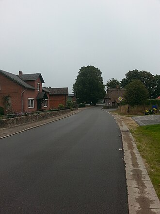
stopping
/'stɔpiŋ/
n. 停止, 制动, 中止, 制止, 堵塞, 阻塞, 填充物, 填塞料, 风幛, 隔墙, 风墙
fastener consisting of a narrow strip of welded metal used to join steel members
4.29
pump
/pʌmp/
n. 抽水机, 打气筒, 泵, 抽吸
a mechanical device that moves fluid or gas by pressure or suction
4.28
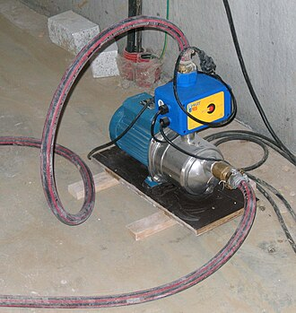
clip
/klip/
n. 修剪, 夹子, 回形针, 剪下来的东西
a metal frame or container holding cartridges; can be inserted into an automatic gun
4.26
trigger
/'trigә/
n. 触发器, 扳机
lever that activates the firing mechanism of a gun
4.25
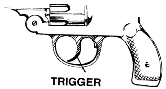
robot
/'rәubәt/
n. 机械人, 自动机械, 机械般工作的人
a mechanism that can move automatically
4.24
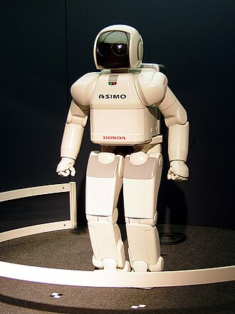
implement
/'implimәnt/
n. 工具, 器具, 手段
instrumentation (a piece of equipment or tool) used to effect an end
4.2
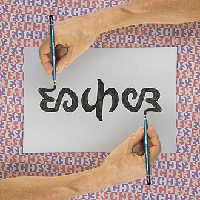
hammer
/'hæmә/
n. 锤, 铁锤, 钉锤
the part of a gunlock that strikes the percussion cap when the trigger is pulled
4.16
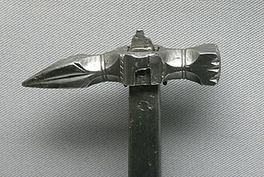
rod
/rɒd/
n. 竿, 笞鞭, 小枝
a long thin implement made of metal or wood
4.14
combine兼类词
/kәm'bain/
n. (企业的)联合, 联合收割机
harvester that heads and threshes and cleans grain while moving across the field
4.13
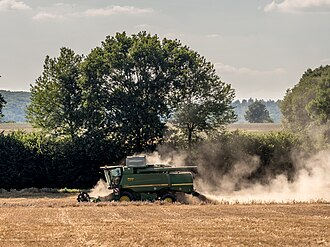
brad
/bræd/
n. 角钉, 曲头钉
a small nail
4.12
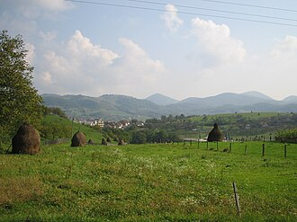
drill
/dril/
n. 钻孔机, 钻子, 播种机, 粗斜纹布
a tool with a sharp point and cutting edges for making holes in hard materials (usually rotating rapidly or by repeated blows)
4.09
anchor
/'æŋkә/
n. 锚
a mechanical device that prevents a vessel from moving
4.02
machinery
/mә'ʃi:nәri/
n. 机器, 机械装置, 机构
machines or machine systems collectively
4.02
starter
/'stɑ:tә/
n. 开端者, 在起跑线上的人, 参加赛跑的人, 调度员, 起动机, 酵母
an electric motor for starting an engine
4.02
poker
/'pәukә/
n. 戳的人, 拨火棍, 纸牌戏
fire iron consisting of a metal rod with a handle; used to stir a fire
3.97
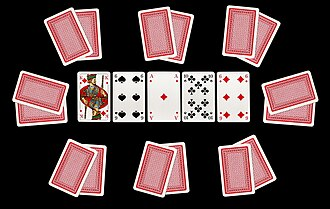
pencil
/'pensl/
n. 铅笔, 色笔, 眉笔, 画笔, 光线束
a thin cylindrical pointed writing implement; a rod of marking substance encased in wood
3.95
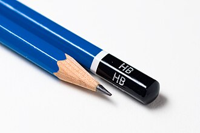
runway
/'rʌnwei/
n. 跑道, 河床, 过道
a bar or pair of parallel bars of rolled steel making the railway along which railroad cars or other vehicles can roll
3.92
ramp
/ræmp/
n. 斜坡, 坡道, 敲诈
an inclined surface connecting two levels
3.83
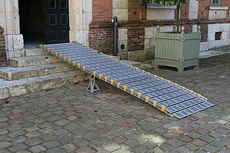
axe
n. 斧, 斧头
an edge tool with a heavy bladed head mounted across a handle
3.79
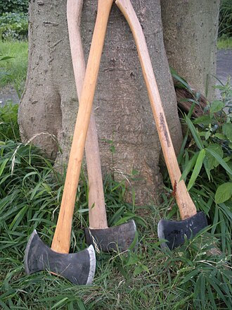
cap opener复合词
/kæp ˈəʊpənə/
n. 启盖器
a bottle opener to pry off caps
3.79
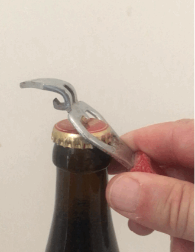
soap pad复合词
/səup pæd/
（洗刷盘、锅等的）肥皂钢丝绒
a cleaning pad containing soap
3.79
strap
/stræp/
n. 带, 皮带
an elongated leather strip (or a strip of similar material) for binding things together or holding something in position
3.79
axe head复合词
[木] 斧头
the cutting head of an ax
3.78
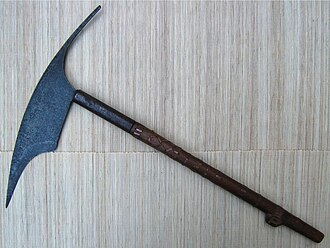
fountain pen复合词
钢笔, 自来水笔
a pen that is supplied with ink from a reservoir in its barrel
3.78
hand axe复合词
/hænd æks/
手斧
a stone tool with a cutting edge; the stone is held in the hand and used for chopping
3.78
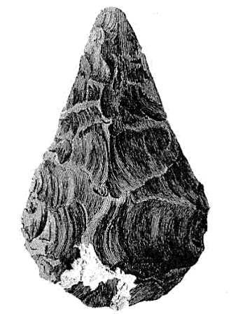
wind tee复合词
/wind ti:/
丁字风向标
weather vane shaped like a T and located at an airfield
3.78
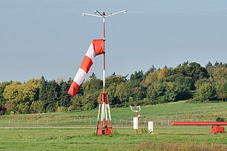
bulletin board复合词
布告栏
a computer that is running software that allows users to leave messages and access information of general interest
3.77
steering mechanism复合词
/ˈstiəriŋ ˈmekənizəm/
操纵[控制，转向，操舵]机构
a mechanism by which something is steered (especially a motor vehicle)
3.77
cane
/kein/
n. 手杖, 细长的茎, 藤条
a stick that people can lean on to help them walk
3.76
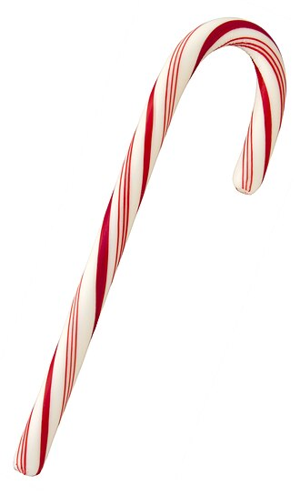
disk controller复合词
磁盘控制器；[计] 磁盘控制器
(computer science) a circuit or chip that translates commands into a form that can control a hard disk drive
3.76
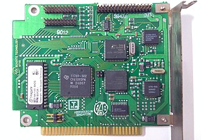
electric razor复合词
/iˈlektrik ˈreizə/
电动刮胡刀, 电动剃刀
a razor powered by an electric motor
3.76
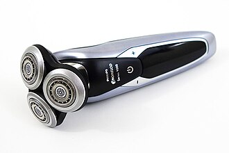
ice axe复合词
/ais æks/
破冰斧
an ax used by mountain climbers for cutting footholds in ice
3.76
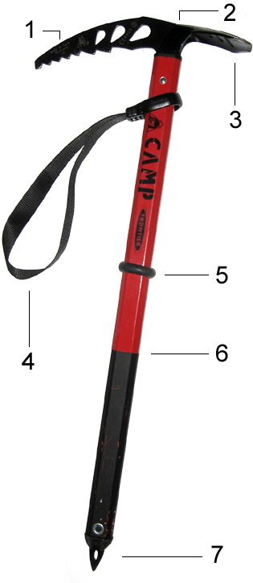
reset button复合词
[计] 清除按钮
a push button that you press to activate the reset mechanism
3.76
transmission shaft复合词
传动轴
rotating shaft that transmits rotary motion from the engine to the differential
3.76
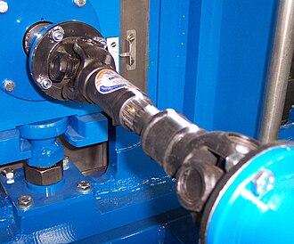
intake valve复合词
/ˈinteik vælv/
进气阀
a valve that controls the flow of fluid through an intake
3.75
serial printer复合词
串行打印机；[计] 串行打印机
a printer that prints a single character at a time
3.75
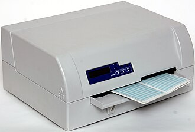
spinning rod复合词
/ˈspɪnɪŋ rɔd/
实心挑料铁杆, 顶底铁杆（用以粘附玻璃器皿, 进行加工或火抛光）
a fishing rod designed for casting a spinning lure
3.75
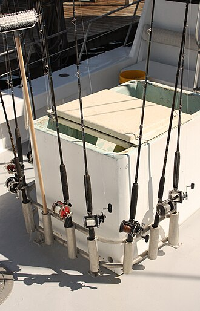
differential gear复合词
[计] 差动齿轮；[化] 差动齿轮; 差动装置
a bevel gear that permits rotation of two shafts at different speeds; used on the rear axle of automobiles to allow wheels to rotate at different speeds on curves
3.74
laser printer复合词
[计] 激光印刷机
electrostatic printer that focuses a laser beam to form images that are transferred to paper electrostatically
3.74
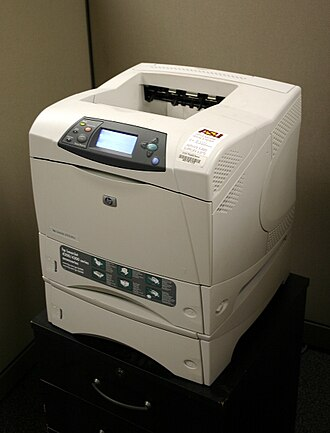
pipe cleaner复合词
/paip ˈkli:nə/
n. 烟斗通条
cleaning implement consisting of a flexible tufted wire that is used to clean a pipe stem
3.74
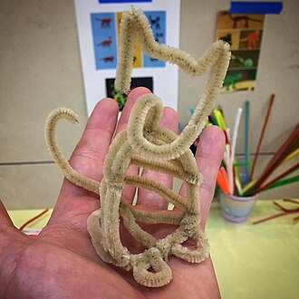
branding iron复合词
/ˈbrændɪŋ/
n. 烙铁, 火印
implement used to brand live stock
3.73
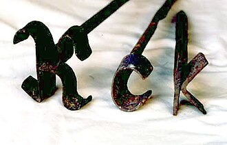
compass saw复合词
/ˈkʌmpəs sɔ:/
钢丝锯
a handsaw with a narrow triangular blade for cutting curves
3.73
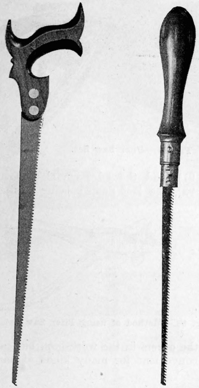
pinch bar复合词
/pintʃ bɑ:/
尖头长杆, 撬杆, 爪棍
a lever with a pointed projection that serves as a fulcrum; used to roll heavy wheels
3.73
polo stick复合词
/ˈpəʊləʊ stik/
n. 马球棍
a mallet used to strike the ball in polo
3.73
slip clutch复合词
[电] 转差离合器
a friction clutch that will slip when the torque is too great
3.73
butterfly valve复合词
[化] 蝶形阀
a valve in a carburetor that consists of a disc that turns and acts as a throttle
3.72
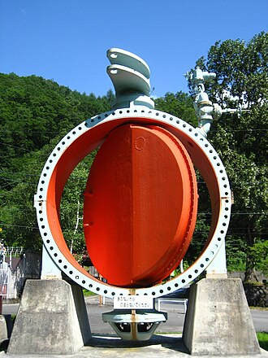
gem clip复合词
/dʒem klip/
[计]回形针
a wire or plastic clip for holding sheets of paper together
3.72
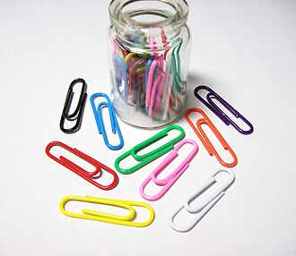
love knot复合词
/lʌv nɔt/
n. 情结, 相思, 园心结
a stylized or decorative knot used as an emblem of love
3.72
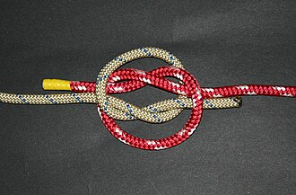
notebook computer复合词
[计] 笔记本计算机
a small compact portable computer
3.72
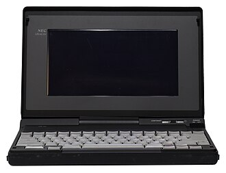
packing needle复合词
/ˈpækɪŋ ˈni:dl/
n. 打包针
a large needle used to sew up canvas packages
3.72
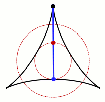
press stud复合词
/pres stʌd/
n. 按扣；摁扣；子母扣
a fastener used on clothing; fastens with a snapping sound
3.72
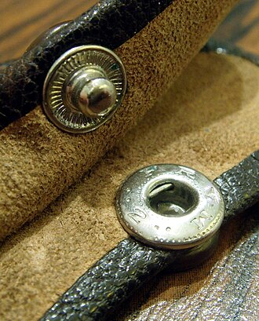
razor
/'reizә/
n. 剃刀
edge tool used in shaving
3.72
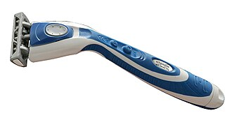
textile machine复合词
/ˈtekstail məˈʃi:n/
纺织机
a machine for making textiles
3.72
analog computer复合词
[计] 模拟计算机；[化] 模拟计算机
a computer that represents information by variable quantities (e.g., positions or voltages)
3.71
auxiliary engine复合词
[机] 补助动力机引擎, 副机
(nautical) a small engine (as one used on board ships to operate a windlass)
3.71
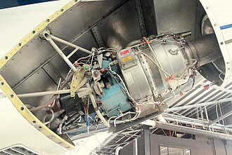
cue stick复合词
桌球杆
sports implement consisting of a tapering rod used to strike a cue ball in pool or billiards
3.71
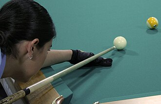
drum printer复合词
[计] 鼓式打印机
a line printer in which the type is mounted on a rotating drum that contains a full character set for each printing position
3.71
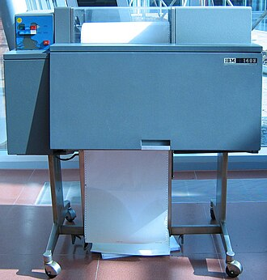
gasoline pump复合词
[化] 汽油泵
a pump in a service station that draws gasoline from underground storage tanks
3.71
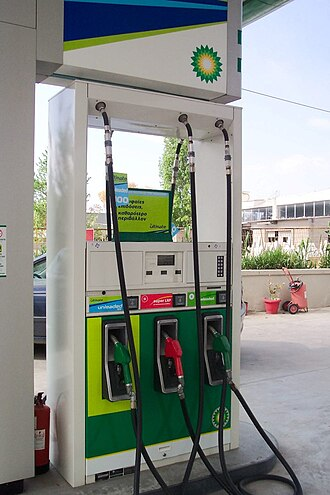
hydraulic system复合词
/haɪˈdrɔ:lɪk ˈsistəm/
液压系统
a mechanism operated by the resistance offered or the pressure transmitted when a liquid is forced through a small opening or tube
3.71
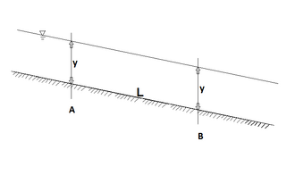
blood knot复合词
= barrel knot
a knot used for tying fishing leaders together; the ends of the two leaders are wrapped around each other two or three times
3.7
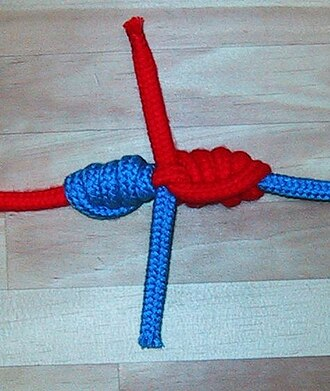
compass plane复合词
/ˈkʌmpəs plein/
凹刨，刳刨，曲面刨
a plane with a flexible face that can plane concave or convex surfaces
3.7
daisy wheel复合词
/ˈdeɪzi: hwi:l/
n. （打字机、打印机的）菊花轮, 菊花字轮
a wheel around which is a set of print characters that make a typing impression on paper
3.7
hydraulic press复合词
[化] 液压机; 油压机; 水压机
press in which a force applied by a piston to a small area is transmitted through water to another piston having a large area
3.7
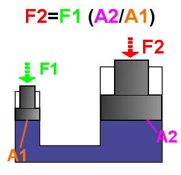
pool cue复合词
/pu:l kju:/
n. 撞球球杆
sports implement consisting of a tapering rod used to strike a cue ball in pool or billiards
3.7
pottery
/'pɒtәri/
n. 陶器, 陶器厂
ceramic ware made from clay and baked in a kiln
3.7
safety razor复合词
保险刀片
a razor with a guard to prevent deep cuts in the skin
3.7
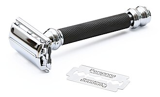
straight razor复合词
(理发师用)折叠式剃刀
a razor with a straight cutting edge enclosed in a case that forms a handle when the razor is opened for use
3.7
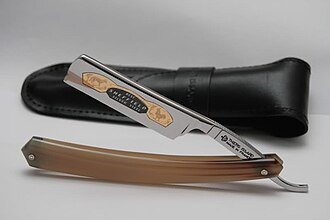
worm wheel复合词
蜗轮
gear with the thread of a worm
3.7
coping saw复合词
/ˈkəupiŋ sɔ:/
n. （锯曲线用的）弓锯
a handsaw with a taut thin blade; used for cutting small curves in wood
3.69
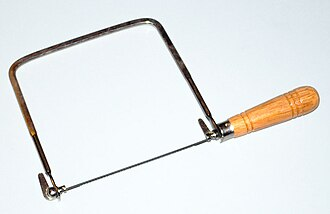
double boiler复合词
/ˈdʌbl ˈbɔɪlə/
n. <美>双层蒸锅
two saucepans, one fitting inside the other
3.69
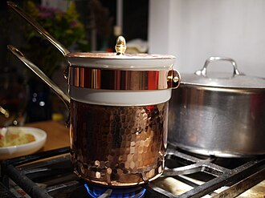
matrix printer复合词
矩阵式打印机；[计] 矩阵式打印机
a printer that represents each character as a pattern of dots from a dot matrix
3.69
petrol engine复合词
/ˈpetrəl ˈendʒin/
汽油（发动）机
an internal-combustion engine that burns gasoline; most automobiles are driven by gasoline engines
3.69
shaping machine复合词
[化] 外胎定型机; 牛头刨床; 成形机; 成形器
a machine tool for shaping metal or wood
3.69
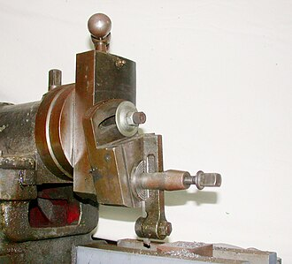
square knot复合词
/skwɛə nɔt/
n. 平结
a double knot made of two half hitches and used to join the ends of two cords
3.69
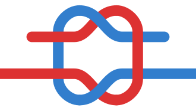
waist anchor复合词
/weist ˈæŋkə/
备用主锚
spare anchor for use in emergency
3.69
worm gear复合词
[机] 蜗轮
gear consisting of a shaft with screw thread (the worm) that meshes with a toothed wheel (the worm wheel); changes the direction of the axis of rotary motion
3.69
brake disk复合词
[机] 煞车圆板
a disk or plate that is fixed to the wheel; pressure is applied to it by the brake pads
3.68
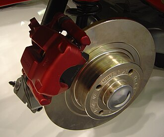
dot printer复合词
[计] 点式打印机
a printer that represents each character as a pattern of dots from a dot matrix
3.68
flat knot复合词
/flæt nɔt/
n. 平结
a square knot used in a reef line
3.68
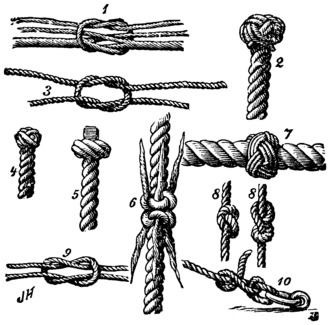
paper cutter复合词
[化] 切纸机
a cutting implement for cutting sheets of paper to the desired size
3.68
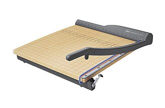
thermal printer复合词
/ˈθə:məl ˈprɪntə/
热敏式印字机, 感热式印字机; 感热式印刷机
a printer that produces characters by applying heat to special paper that is sensitive to heat
3.68
ignition system复合词
/ɪgˈnɪʃən ˈsistəm/
（汽车）点火系统
the mechanism that ignites the fuel in an internal-combustion engine
3.67
bumper jack复合词
/ˈbʌmpə dʒæk/
n. 汽车千斤顶
a jack for lifting a motor vehicle by the bumper
3.66
butcher knife复合词
屠刀
a large sharp knife for cutting or trimming meat
3.66
palette knife复合词
/ˈpælɪt naif/
n. 调色刀
a spatula used by artists for mixing or applying or scraping off oil paints
3.66
sewing machine复合词
[机] 缝纫机
a textile machine used as a home appliance for sewing
3.66
shaping tool复合词
/ˈʃeipiŋ tu:l/
成形切刀，样板刀
a tool for shaping metal
3.66
staple gun复合词
/ˈsteipl ɡʌn/
n. （把钉书钉或U形钉打进坚实物料的）钉枪
a hand-held machine for driving staples home
3.66
sword cane复合词
/sɔ:d kein/
n. 内藏刀剑的木杖, 剑杖
a cane concealing a sword or dagger
3.66
bumper guard复合词
/ˈbʌmpə ɡɑ:d/
缓冲保护器
vertical bars attached to a bumper to prevent locking bumpers with another vehicle
3.65
helm
/helm/
n. 舵, 驾驶盘, 枢机, 头盔
steering mechanism for a vessel; a mechanical device by which a vessel is steered
3.65
rotating mechanism复合词
旋转机构
a mechanism that rotates
3.65
scrub plane复合词
[机械装置]粗刨
a narrow woodworking plane used to cut away excess stock
3.65
tin opener复合词
n. 开罐头刀
a device for cutting cans open
3.65
baton
/'bætәn/
n. 指挥棒, 接力棒, 警棍
a thin tapered rod used by a conductor to lead an orchestra or choir
3.64
disk clutch复合词
/disk klʌtʃ/
盘式离合器
a friction clutch in which the frictional surfaces are disks
3.64
exhaust valve复合词
[化] 排气阀
a valve through which burned gases from a cylinder escape into the exhaust manifold
3.64
idle wheel复合词
[化] 惰轮
a pulley on a shaft that presses against a guide belt to guide or tighten it
3.64
lever
/'levә/
n. 杠杆, 似杠杆之工具
a rigid bar pivoted about a fulcrum
3.64
automatic choke复合词
/ˌɔ:təˈmætik tʃəuk/
自动阻气门
a choke that automatically controls the flow of air to the carburetor
3.63
auxiliary pump复合词
[化] 辅助泵
a supplementary pump available if needed
3.63
carriage bolt复合词
/ˈkæridʒ bəult/
车身螺栓
a roundheaded bolt for timber; threaded along part of the shank; inserted into holes already drilled
3.63
ignition switch复合词
/ɪgˈnɪʃən switʃ/
点火开关
switch that operates a solenoid that closes a circuit to operate the starter
3.63
spinning jenny复合词
/'spiniŋ/
n. 多轴纺织机
an early spinning machine with multiple spindles
3.63
turbine
/'tә:bain/
n. 涡轮机
rotary engine in which the kinetic energy of a moving fluid is converted into mechanical energy by causing a bladed rotor to rotate
3.63
violin bow复合词
小提琴弓
a bow used in playing the violin
3.63
wire cutter复合词
/ˈwaiə ˈkʌtə/
剪钳
an edge tool used in cutting wire
3.63
gas pedal复合词
/ɡæs ˈpedl/
n. <美>加速者, 加速器
a pedal that controls the throttle valve
3.62
hydraulic transmission复合词
[化] 水力传动
a transmission that depends on a hydraulic system
3.62
loop knot复合词
/lu:p nɔt/
环圈结
any of various knots used to make a fixed loop in a rope
3.62
microphone boom复合词
[电] 微音器档木板
a pole carrying an overhead microphone projected over a film or tv set
3.62
regulator
/'regjuleitә/
n. 调整者, 校准者, 校准器, 调整器, 标准钟
any of various controls or devices for regulating or controlling fluid flow, pressure, temperature, etc.
3.62
steam turbine复合词
汽轮机；[化] 汽轮机; 蒸汽涡轮; 蒸汽透平
turbine in which steam strikes blades and makes them turn
3.62
foot lever复合词
/fut ˈli:və/
脚踏操纵杆
a lever that is operated with the foot
3.61
foot pedal复合词
[计] 脚踏开关
a lever that is operated with the foot
3.61
gas turbine复合词
[化] 燃气轮机; 燃气透平
turbine that converts the chemical energy of a liquid fuel into mechanical energy by internal combustion; gaseous products of the fuel (which is burned in compressed air) are expanded through a turbine
3.61
hydraulic pump复合词
[化] 水力泵; 液压泵; 油压泵
a water pump that uses the kinetic energy of flowing water to force a small fraction of that water to a reservoir at a higher level
3.61
petrol pump复合词
/ˈpetrəl pʌmp/
加油泵
a pump in a service station that draws gasoline from underground storage tanks
3.61
simulator
/'simjuleitә/
n. 模拟器, 假装者
a machine that simulates an environment for the purpose of training or research
3.61
cotton gin复合词
[建] 轧棉机
a machine that separates the seeds from raw cotton fibers
3.6
reaction turbine复合词
[机] 反动式涡轮机, 压力涡轮机, 不等压涡轮机
a turbine with blades arranged to develop torque from gradual decrease of steam pressure from inlet to exhaust
3.6
rotary press复合词
/ˈrəutəri pres/
n. 轮转印刷机
a printing press for printing from a revolving cylinder
3.6
soft pedal复合词
钢琴弱音踏板, 减弱效果的东西
a pedal on a piano that moves the action closer to the strings and so soften the sound
3.6
spur gear复合词
[机] 正齿轮
gear wheels that mesh in the same plane
3.6
spur wheel复合词
/spə: hwi:l/
n. 正齿轮
gear wheels that mesh in the same plane
3.6
wind turbine复合词
/ˈwɪnd tɜ:baɪn/
风轮机, 风力涡轮机
a turbine that is driven by the wind
3.6
barrel knot复合词
/ˈbærəl nɔt/
桶结
a knot used for tying fishing leaders together; the ends of the two leaders are wrapped around each other two or three times
3.59
flight simulator复合词
飞行模拟装置
simulator consisting of a machine on the ground that simulates the conditions of flying a plane
3.59
hydraulic ram复合词
[电] 冲击起水机
a water pump that uses the kinetic energy of flowing water to force a small fraction of that water to a reservoir at a higher level
3.59
lever lock复合词
[电] 闸柄闸
a lock whose tumblers are levers that must be raised to a given position so that the bolt can move
3.59
loud pedal复合词
(钢琴上的)强音踏板[亦作 damper pedal]
a pedal on a piano that lifts the dampers from the strings and so allows them to continue vibrating
3.59
pipe cutter复合词
[机] 截管器
a hand tool for cutting pipe
3.59
rotary engine复合词
[机] 旋缸发动机
an internal-combustion engine in which power is transmitted directly to rotating components
3.59
chin strap复合词
下巴托，枕颏带
a strap attached to a hat; passes under the chin and holds the hat in place
3.58
crank handle复合词
[建] 手摇曲柄
crank used to start an engine
3.58
gear lever复合词
[机] 变速杆
a mechanical device for engaging and disengaging gears
3.58
scrub brush复合词
板刷
a brush with short stiff bristles for heavy cleaning
3.58
slate pencil复合词
石笔
a pencil of soft slate (or soapstone) used for writing on a slate
3.58
lag screw复合词
/læɡ skru:/
板头尖端木螺钉，方头螺钉
a heavy woodscrew with a square or hexagonal head that is driven in with a wrench
3.57
flick knife复合词
/flik naif/
n. 弹簧刀
a pocketknife with a blade that springs open at the press of a button
3.56
hockey puck复合词
/ˈhɔki pʌk/
冰球
a vulcanized rubber disk 3 inches in diameter that is used instead of a ball in ice hockey
3.56
lantern wheel复合词
na. 灯笼式小齿轮
a small pinion having cylindrical bars instead of teeth, used chiefly in inexpensive clocks
3.56
porcelain
/'pɒ:slin/
n. 瓷器, 瓷
ceramic ware made of a more or less translucent ceramic
3.56
calculating machine复合词
计算器；[经] 计算机
a small machine that is used for mathematical calculations
3.55
cone clutch复合词
/kəun klʌtʃ/
锥式离合器，锥形离合器
a friction clutch in which the frictional surfaces are cone-shaped
3.55
cookie cutter复合词
饼干成型切割刀
a kitchen utensil used to cut a sheet of cookie dough into desired shapes before baking
3.55
hand calculator复合词
[计] 手动计算器
a calculator small enough to hold in the hand or carry in a pocket
3.55
ripping bar复合词
/ˈripiŋ bɑ:/
撬棍; 撬杆
a steel lever with one end formed into a ripping chisel and the other a gooseneck with a claw for pulling nails
3.55
bolt cutter复合词
/bəult ˈkʌtə/
螺栓刀具，断线钳
an implement for cutting bolts
3.54
booster unit复合词
/ˈbu:stə ˈju:nit/
助推器组
the first stage of a multistage rocket
3.54
kettle
/'ketl/
n. 茶壶, 罐
a metal pot for stewing or boiling; usually has a lid
3.54
stove bolt复合词
/stəuv bəult/
炉用螺栓，（丝扣到根的）短螺栓
a small machine bolt
3.54
baking tray复合词
/ˈbeikiŋ trei/
n. 焙烤浅盘
a cooking utensil consisting of a flat rectangular metal sheet used for baking cookies or biscuits
3.53
compound lever复合词
/ˈkɔmpaund ˈli:və/
复式杠杆; 复杆
a pair of levers hinged at the fulcrum
3.53
distributor cam复合词
/dɪˈstrɪbjətə kæm/
分电器凸轮，分配凸轮
the cam inside the distributor that rotates to contact spark plug terminals in the correct order
3.53
donkey pump复合词
[化] 蒸汽往复泵(锅炉进水泵)
a supplementary pump available if needed
3.53
rotating shaft复合词
转轴
a revolving rod that transmits power or motion
3.53
shaving brush复合词
修面刷
a brush used to apply lather prior to shaving
3.53
drip pan复合词
[化] 盛液盘
pan for catching drippings under roasting meat
3.52
drip pot复合词
[化] 气体分液罐
a coffeepot for making drip coffee
3.52
lag bolt复合词
/læɡ bəult/
方头螺栓，木螺栓
a heavy woodscrew with a square or hexagonal head that is driven in with a wrench
3.52
mast
/mɑ:st/
n. 桅, 桅杆, 杆
a vertical spar for supporting sails
3.52
vending machine复合词
/'vendiŋ/
n. 自动贩卖机
a slot machine for selling goods
3.52
planetary gear复合词
[化] 行星齿轮
an outer gear that revolves about a central sun gear of an epicyclic train
3.51
pocket calculator复合词
[计] 便携式计算器, 袖珍计算器
a calculator small enough to hold in the hand or carry in a pocket
3.51
sewing needle复合词
/ˈsəʊɪŋ ˈni:dl/
n. 缝纫针
a needle used in sewing to pull thread through cloth
3.51
snatch block复合词
/snætʃ blɔk/
扒矿机钢丝绳的导轮, 扣线滑轮, 开口滑车; 有盖滑车
a pulley-block that can be opened to receive the bight of a rope
3.51
straight flute复合词
/streit flu:t/
直槽[沟]
a rock drill with flutes that are straight
3.51
tuning fork复合词
/'tju:niŋ/
音叉；[化] 音叉
a metal implement with two prongs that gives a fixed tone when struck; used to tune musical instruments
3.51
buckle
/'bʌkl/
n. 皮带扣, 扣子
fastener that fastens together two ends of a belt or strap; often has loose prong
3.5
power shovel复合词
/ˈpauə ˈʃʌvl/
动力铲, 机铲, 铲土机; 掘土机; 电铲
a machine for excavating
3.5
royal mast复合词
[航海学]顶桅，最上桅
topmast immediately above the topgallant mast
3.5
shovel
/'ʃʌvl/
n. 铲, 铁铲
a hand tool for lifting loose material; consists of a curved container or scoop and a handle
3.5
steam shovel复合词
/sti:m ˈʃʌvl/
n. <美>蒸汽铲, 蒸汽挖土机
a power shovel that is driven by steam
3.5
axle
/'æksl/
n. 轴, 车轴
a shaft on which a wheel rotates
3.49
belt buckle复合词
/belt ˈbʌkl/
带扣
the buckle used to fasten a belt
3.49
booster rocket复合词
/ˈbu:stə ˈrɔkit/
助推火箭
the first stage of a multistage rocket
3.49
cartridge clip复合词
弹夹
a metal frame or container holding cartridges; can be inserted into an automatic gun
3.49
claw hammer复合词
羊角鎚
a hammer with a cleft at one end for pulling nails
3.49
fore plane复合词
[土木工程]粗刨
a carpenter's plane intermediate between a jack plane and a jointer plane
3.49
friction clutch复合词
[计] 摩擦离合器
a clutch in which one part turns the other by the friction between them
3.49
hand shovel复合词
/hænd ˈʃʌvl/
手铲
a shovel that is operated by hand
3.49
live axle复合词
/liv ˈæksəl/
活络轴; 有效轴; 主动轴; 传动轴
the axle of a self-propelled vehicle that provides the driving power
3.49
paddle
/'pædl/
n. 桨, 划桨, 明轮翼
small wooden bat with a flat surface; used for hitting balls in various games
3.49
peg
/peg/
n. 钉, 桩, 栓, 藉口, 销子, 借口
a wooden pin pushed or driven into a surface
3.49
cartridge holder复合词
/ˈkɑ:tridʒ ˈhəuldə/
弹夹
a metal frame or container holding cartridges; can be inserted into an automatic gun
3.48
dead axle复合词
/ded ˈæksəl/
静轴，不转轴，从动轴
an axle that carries a wheel but without power to drive it
3.48
jury mast复合词
/ˈdʒuəri mɑ:st/
应急桅杆
a temporary mast to replace one that has broken off
3.48
ledger board复合词
/ˈledʒə bɔ:d/
栏顶板，脚手板，木架隔层横木
top rail of a fence or balustrade
3.48
mushroom anchor复合词
/ˈmʌʃrum ˈæŋkə/
蘑菇形锚; 菌形锚
an anchor used for semipermanent moorings; has a bowl-shaped head that will dig in however it falls
3.48
shutter
/'ʃʌtә/
n. 百叶窗, 关闭物, 照相机快门, 关闭者
a mechanical device on a camera that opens and closes to control the time of a photographic exposure
3.48
spark lever复合词
/spɑ:k ˈli:və/
点火杆
(on early automobiles) a lever mounted on the steering column and used to adjust the timing of the ignition
3.48
aperture
/'æpә.tjuә/
n. 孔, 缝隙, 孔径
a device that controls amount of light admitted
3.47
axle bar复合词
/ˈæksəl bɑːr/
铁轴棒
an iron bar that serves as an axletree
3.47
brake pedal复合词
[化] 刹车踏板
foot pedal that moves a piston in the master brake cylinder
3.47
clothes peg复合词
/kləuðz peɡ/
n. 晒衣绳上的衣夹
wood or plastic fastener; for holding clothes on a clothesline
3.47
dolphin striker复合词
[造船]船首斜桁垂木, 艏斜桁撑杆
spar under the bowsprit of a sailboat
3.47
driving axle复合词
[化] 主动轴
the axle of a self-propelled vehicle that provides the driving power
3.47
electric mixer复合词
/iˈlektrik ˈmɪksə/
电动搅拌机
a food mixer powered by an electric motor
3.47
hand throttle复合词
/hænd ˈθrɔtl/
手（动）油门
a hand-operated lever that controls the throttle valve
3.47
reef knot复合词
[医] 帆结, 反结
a square knot used in a reef line
3.47
router plane复合词
平槽刨
a woodworking plane with a narrow cutting head that will make grooves with smooth bottoms
3.47
throttle
/'θrɒtl/
n. 节流阀, 节气阀, 喉咙
a valve that regulates the supply of fuel to the engine
3.47
wand
/wɒnd/
n. 棒, 棍, 杖
a rod used by a magician or water diviner
3.47
carving knife复合词
/ˈkɑ:vɪŋ naif/
n. 切肉用的餐刀
a large knife used to carve cooked meat
3.46
coal shovel复合词
[建] 煤铲, 煤锹
a hand shovel for shoveling coal
3.46
cider mill复合词
un. 苹果榨汁机
mill that extracts juice from apples to make apple cider
3.45
concrete mixer复合词
[机] 混凝土混合机
a machine with a large revolving drum in which cement is mixed with other materials to make concrete
3.45
paddle wheel复合词
[化] 叶轮
a large wheel fitted with paddles and driven by an engine in order to propel a boat
3.45
piston ring复合词
[化] 活塞环; 涨圈
seal consisting of a split metal ring that seals the gap between a piston and the cylinder wall
3.45
record changer复合词
[电] 记录改变器
an automatic mechanical device on a record player that causes new records to be played without manual intervention
3.45
clutch pedal复合词
[机] 离合器踏板
a pedal or lever that engages or disengages a rotating shaft and a driving mechanism
3.44
electric toothbrush复合词
/iˈlektrik ˈtu:θˌbrʌʃ/
电动牙刷
a toothbrush with an electric motor in the handle that vibrates the head of the brush
3.44
barge pole复合词
撑篙
a long pole used to propel or guide a barge
3.43
blender
/'blendә/
n. 混合者, 混合器, 搅拌器
an electrically powered mixer with whirling blades that mix or chop or liquefy foods
3.43
dripping pan复合词
(放在烤肉等食物下面的)接油盘，油滴盘[亦作 drip pan]
pan for catching drippings under roasting meat
3.43
knitting machine复合词
/ˈnɪtɪŋ məˈʃi:n/
n. 编织机，针织机
a textile machine that makes knitted fabrics
3.43
radial engine复合词
[机] 星形发动机, 放射状星形发动机
an internal-combustion engine having cylinders arranged radially around a central crankcase
3.43
tack hammer复合词
平头钉锤
a light hammer that is used to drive tacks
3.43
accelerator
/әk'selәreitә/
n. 加速剂, 加速器, 油门
a pedal that controls the throttle valve
3.42
broom
/bru:m/
n. 扫帚, 金雀花
a cleaning implement for sweeping; bundle of straws or twigs attached to a long handle
3.42
rotor head复合词
/ˈrəʊtə hed/
旋翼毂
the axis around which the major rotor of a helicopter turns
3.42
half hitch复合词
/hɑ:f hitʃ/
n. 半结
a knot used to fasten a rope temporarily to an object; usually tied double
3.41
main rotor复合词
/mein ˈrəʊtə/
主旋翼，主转子
rotor consisting of large rotating airfoils on a single-rotor helicopter that produce the lift to support the helicopter in the air
3.41
paving machine复合词
/ˈpeiviŋ məˈʃi:n/
铺贴机
a machine for laying pavement
3.41
tile cutter复合词
/tail ˈkʌtə/
瓷砖刀
a cutter (tool for cutting) for floor tiles
3.41
wire stripper复合词
/ˈwaiə ˈstripə/
剥皮钳
a hand tool used by electricians to remove insulation from the cut end of an insulated wire
3.41
bender
/'bendә/
n. 扭弄物体的人, 六便士银币, 饮酒作乐
a tool for bending
3.4
buzzer
/'bʌzә/
n. 嗡嗡作声的东西, 蜂音器
a push button at an outer door that gives a ringing or buzzing signal when pushed
3.4
dildo
/dildәu/
n. 人造阴茎
a vibrating device that substitutes for an erect penis to provide vaginal stimulation
3.4
push broom复合词
/puʃ bru:m/
推式路帚; 推帚
a wide broom that is pushed ahead of the sweeper
3.4
air conditioner复合词
[化] 空调器; 空气调节器
a system that keeps air cool and dry
3.39
mop
/mɒp/
n. 拖把, 鬼脸
cleaning implement consisting of absorbent material fastened to a handle; for cleaning floors
3.39
piston rod复合词
[化] 活塞杆
connecting rod that moves or is moved by a piston
3.39
compressor
/kәm'presә/
n. 压缩物, 压缩机, 压肌
a mechanical device that compresses gasses
3.38
frying pan复合词
煎锅, 长柄平底锅
a pan used for frying foods
3.38
roach clip复合词
[美国俚语]大麻香烟烟嘴, 大麻烟烟蒂夹[亦作roach holder]
metal tweezers used by marijuana smokers to hold a roach
3.38
rolling hitch复合词
/ˈrəʊlɪŋ hitʃ/
轮结
a hitch for fastening a line to a spar or another rope
3.38
tent peg复合词
帐篷桩
a peg driven into the ground to hold a rope supporting a tent
3.38
throttle valve复合词
[化] 节流阀
a valve that regulates the supply of fuel to the engine
3.38
toothbrush
/'tu:θbrʌʃ/
n. 牙刷
small brush; has long handle; used to clean teeth
3.38
wrecking bar复合词
/ˈrekiŋ bɑ:/
撬棒
a heavy iron lever with one end forged into a wedge
3.38
air compressor复合词
[化] 空气压缩机; 空压机
a compressor that takes in air at atmospheric pressure and delivers it at a higher pressure
3.37
cement mixer复合词
[化] 水泥浆搅拌机
a machine with a large revolving drum in which cement is mixed with other materials to make concrete
3.37
dry mop复合词
干拖把, 长柄拖把 (=dust mop)
a dry swab for dusting floors
3.37
expansive bit复合词
伸缩式钻头
a bit with a cutting blade that can be adjusted to different sizes
3.37
gearing
/'giәriŋ/
n. 传动装置
wheelwork consisting of a connected set of rotating gears by which force is transmitted or motion or torque is changed
3.37
impulse turbine复合词
[电] 脉冲轮机
a turbine that is driven by jets direct against the blades
3.37
rein
/rein/
n. 缰绳, 统治, 支配
one of a pair of long straps (usually connected to the bit or the headpiece) used to control a horse
3.37
roach holder复合词
[美国俚语]大麻香烟烟嘴，大麻烟烟蒂夹
metal tweezers used by marijuana smokers to hold a roach
3.37
tail rotor复合词
/teil ˈrəʊtə/
尾部螺旋浆，尾部旋转翼
rotor consisting of a rotating airfoil on the tail of a single-rotor helicopter; keeps the helicopter from spinning in the direction opposite to the rotation of the main rotor
3.37
box wrench复合词
/bɔks rentʃ/
套筒扳手
a wrench with a closed loop (a socket) that fits over a nut or bolt head
3.36
granny knot复合词
[医] 顺结, 十字结
a reef knot crossed the wrong way and therefore insecure
3.36
leading rein复合词
/ˈli:diŋ rein/
[体]开控缰
rein to direct the horse's head left or right
3.36
chain wrench复合词
[化] 链式扳手; 链条管子钳
another name for chain tongs
3.35
diffusion pump复合词
[电] 扩散抽气机
vacuum pump used to obtain a high vacuum
3.35
dust mop复合词
长柄拖把, 干拖把[亦作 dry mop]
a dry swab for dusting floors
3.35
sealing wax复合词
封蜡, 火漆；[化] 火漆
fastener consisting of a resinous composition that is plastic when warm; used for sealing documents and parcels and letters
3.35
smoother
/'smu:ðә/
n. 弄平的人, 路面平整机, 修光工具
a power tool used for sanding wood; an endless loop of sandpaper is moved at high speed by an electric motor
3.35
ax
/æks/
n. 斧头
an edge tool with a heavy bladed head mounted across a handle
3.34
cooker
/'kukә/
n. 炊事用具, 炉灶, 锅, 炊具, 烹饪用水果, 窜改者, 伪造者
a utensil for cooking
3.34
hand ax复合词
/hænd æks/
手斧, （史前的）石斧; 无柄石斧
a stone tool with a cutting edge; the stone is held in the hand and used for chopping
3.34
knitting needle复合词
/ˈnɪtɪŋ ˈni:dl/
n. 编织品, 针织
needle consisting of a slender rod with pointed ends; usually used in pairs
3.34
latch
/lætʃ/
n. 门闩
spring-loaded doorlock that can only be opened from the outside with a key
3.34
loom
/lu:m/
n. 织布机, 若隐若现的景象
a textile machine for weaving yarn into a textile
3.34
night latch复合词
/nait lætʃ/
n. 夜锁, 弹簧锁
doorlock operated by a knob on the inside and a key on the outside
3.34
power loom复合词
/ˈpauə lu:m/
n. 动力织布机
a loom operated mechanically
3.34
ceramic ware复合词
陶瓷器
utensils made from ceramic material
3.33
cigar cutter复合词
/siˈɡɑ: ˈkʌtə/
n. 雪茄烟切刀
an implement for cutting the tip off of a cigar
3.33
door latch复合词
[化] 排料启闭器
spring-loaded doorlock that can only be opened from the outside with a key
3.33
hook wrench复合词
/huk rentʃ/
钩形扳手
a wrench with a hook that fits over a nut or bolt head
3.33
ice ax复合词
/ais æks/
碎冰斧
an ax used by mountain climbers for cutting footholds in ice
3.33
milling machine复合词
[机] 铣床
machine tool in which metal that is secured to a carriage is fed against rotating cutters that shape it
3.33
propeller
/prә'pelә/
n. 螺旋桨, 推进器
a mechanical device that rotates to push against air or water
3.33
spade bit复合词
/speid bit/
铲形钻头
a thin bit with a center point and cutting edges on either side
3.33
tennis racket复合词
/ˈtenis ˈrækit/
n. 网球拍
a racket used to play tennis
3.33
tube wrench复合词
/tju:b rentʃ/
管子扳手
adjustable wrench for gripping and turning a pipe; has two serrated jaws that are adjusted to grip the pipe
3.33
binder
/'baindә/
n. 捆缚者, 用以绑缚之物, 活页夹
a machine that cuts grain and binds it in sheaves
3.32
break seal复合词
/breik si:l/
破坏密封
a seal that must be broken when first used and cannot easily be resealed
3.32
pin wrench复合词
[机] 针销扳钳
a wrench that has a projecting pin that fits into a socket on the object to be turned
3.32
pipe wrench复合词
[机] 管扳钳, 管子钳
adjustable wrench for gripping and turning a pipe; has two serrated jaws that are adjusted to grip the pipe
3.32
power tool复合词
[化] 电动工具
a tool driven by a motor
3.32
rocker arm复合词
[电] 摇臂
a lever pivoted at the center; used especially to push a valve down in an internal-combustion engine
3.32
screw wrench复合词
螺旋扳手；[机] 赶锥, 螺丝起子, 木螺丝刀
adjustable wrench that has one jaw that can be adjusted by turning a screw
3.32
tap wrench复合词
[机] 螺丝攻扳钳
a wrench for turning a tap to create an internal screw thread
3.32
timber hitch复合词
/ˈtimbə hitʃ/
n. （将绳子系在桅杆等圆材上时用的）圆材结; 提拉结攀
a hitch used to secure a rope to a log or spar; often supplemented by a half hitch
3.32
analogue computer复合词
[经] 模拟电脑
a computer that represents information by variable quantities (e.g., positions or voltages)
3.31
bearing rein复合词
/ˈbɛəriŋ rein/
[体]颈上控缰
a rein designed to keep the horse's head in the desired position
3.31
carpet tack复合词
(钉地毯的)扁头地毯钉
used to nail down carpets
3.31
coffee grinder复合词
/ˈkɔfi ˈgraɪndə/
咖啡豆的磨具
a mill that grinds roasted coffee beans
3.31
garden spade复合词
园艺锹；园艺铲
a spade used by gardeners
3.31
lock washer复合词
[化] 弹簧垫圈
washer that prevents a nut from loosening
3.31
suction pump复合词
n. 抽水机
a pump for raising fluids by suction
3.31
takeoff rocket复合词
/ˈteɪkˌɔ:f ˈrɔkit/
起飞火箭
the first stage of a multistage rocket
3.31
meat grinder复合词
/mi:t ˈgraɪndə/
n. 绞肉机
a mill for grinding meat
3.3
rotor shaft复合词
[化] 转轴
the axis around which the major rotor of a helicopter turns
3.3
zipper
/'zipә/
n. 拉链
a fastener for locking together two toothed edges by means of a sliding tab
3.3
burr drill复合词
/bɜ: dril/
[医]牙钻
a high speed drill that dentists use to cut into teeth
3.29
hood latch复合词
/hud lætʃ/
机罩闩
a catch that holds the hood of a car shut
3.29
monkey wrench复合词
活动扳手；[机] 活动扳手
adjustable wrench that has one fixed and one adjustable jaw
3.29
pancake turner复合词
/ˈpænˌkeɪk ˈtə:nə/
n. 锅铲
turner for serving or turning pancakes
3.29
sustaining pedal复合词
/səsˈteiniŋ ˈpedl/
（钢琴的）延音踏板
a pedal on a piano that lifts the dampers from the strings and so allows them to continue vibrating
3.29
taper file复合词
[机] 推拔扁锉, 尖头扁锉
a file with converging edges
3.29
carpet loom复合词
/ˈkɑ:pit lu:m/
地毯织机
a loom for weaving carpeting
3.28
fence rail复合词
/fens reil/
栅栏，防护梁
a rail that is split from a log
3.28
hand tool复合词
[机] 手工具
a tool used with workers' hands
3.28
hay conditioner复合词
/hei kənˈdiʃənə/
牧草压扁机
a farm machine that treats hay to cause more rapid and even drying
3.28
scoop shovel复合词
/sku:p ˈʃʌvl/
斗式挖土机; 单斗电铲; 铲斗挖土机; 勺铲
the shovel or bucket of a dredge or backhoe
3.28
screw propeller复合词
螺旋桨；[机] 螺旋桨, 螺旋推进桨
a propeller with several angled blades that rotates to push against water or air
3.28
time machine复合词
时间机器（能使人往返于过去或未来）
a science fiction machine that is supposed to transport people or objects into the past or the future
3.28
water finder复合词
/ˈwɔ:tə ˈfaində/
测水器，试水器
forked stick that is said to dip down to indicate underground water or oil
3.28
alligator clip复合词
[电] 鳄鱼夹
a clip with a spring that closes the metal jaws
3.27
emery wheel复合词
[化] 砂轮; 砂轮机；[医] 刚沙轮
a wheel composed of abrasive material; used for grinding
3.27
valve rocker复合词
[化] 阀摇杆
a lever pivoted at the center; used especially to push a valve down in an internal-combustion engine
3.27
typewriter
/'taip.raitә/
n. 打字机
hand-operated character printer for printing written messages one character at a time
3.26
vibrating reed复合词
[电] 振簧
a vibrator consisting of a thin strip of stiff material that vibrates to produce a tone when air streams over it
3.26
carriage wrench复合词
/ˈkæridʒ rentʃ/
套筒板手
a wrench designed for use with carriage bolts
3.25
electric typewriter复合词
[计] 电动打字机
a typewriter powered by an electric motor
3.25
hoe
/hәu/
n. 锄头
a tool with a flat blade attached at right angles to a long handle
3.25
snow blower复合词
/snəu ˈbləuə/
旋转式清雪机，吹雪机
a machine that removes snow by scooping it up and throwing it forcefully through a chute
3.25
bobby pin复合词
/ˈbɔbi pin/
n. 发夹
a flat wire hairpin whose prongs press tightly together; used to hold bobbed hair in place
3.24
fishing rod复合词
钓鱼桿
a rod of wood or steel or fiberglass that is used in fishing to extend the fishing line
3.24
lead pencil复合词
/li:d ˈpensəl/
n. （石墨）铅笔
pencil that has graphite as the marking substance
3.24
power saw复合词
/ˈpauə sɔ:/
n. 动力锯
a power tool for cutting wood
3.24
record player复合词
电唱机；[电] 记录制造器
machine in which rotating records cause a stylus to vibrate and the vibrations are amplified acoustically or electronically
3.24
slide action复合词
/slaid ˈækʃən/
[体]前托推拉式退壳
action mechanism in a modern rifle or shotgun; a back and forward motion of a sliding lever ejects the empty shell case and cocks the firearm and loads a new round
3.24
steering wheel复合词
/'stiәriŋ/
[机] 轮船舵轮, 驾驶盘
a handwheel that is used for steering
3.24
wagon wheel复合词
un. 货车轮
a wheel of a wagon
3.24
walking stick复合词
拐杖
a stick carried in the hand for support in walking
3.24
coffee urn复合词
un. 煮咖啡壶
an urn in which coffee is made and kept hot
3.23
tea urn复合词
un. 水壶；茶壶
an urn in which tea is brewed and from which it is served
3.23
crochet hook复合词
/krəʊˈʃeɪ huk/
钩针
a needle with a hook on the end; used in crocheting
3.22
accelerator pedal复合词
[机] 加速踏板
a pedal that controls the throttle valve
3.21
brace wrench复合词
/breis rentʃ/
曲柄头扳手
a wrench shaped like a brace (has a handle shaped like a crank) and a socket head
3.21
grappling iron复合词
/ˈgræplɪŋ ˈaiən/
钩锚
a tool consisting of several hooks for grasping and holding; often thrown with a rope
3.21
plow
/plau/
n. 犁
a farm tool having one or more heavy blades to break the soil and cut a furrow prior to sowing
3.21
action mechanism复合词
/ˈækʃən ˈmekənizəm/
酌机制
the operating part that transmits power to a mechanism
3.2
adding machine复合词
算术计算机；[经] 加算机, 加数机
a calculator that performs simple arithmetic functions
3.2
air conditioning复合词
用空调设备调节空气, 空调设备；[计] 空调; 空气调节
a system that keeps air cool and dry
3.2
air hammer复合词
[化] 气锤; 空气锤；[医] 气锤
a hammer driven by compressed air
3.2
air pump复合词
气泵, 抽气机；[化] 气泵; 抽气机; 空压机
a pump that moves air in or out of something
3.2
aircraft engine复合词
[机] 航空发动机
the engine that powers and aircraft
3.2
automatic drive复合词
/ˌɔ:təˈmætik draiv/
n. （汽车等）自动驾驶
a transmission that automatically changes the gears according to the speed of the car
3.2
automatic transmission复合词
[机] 自动变速机构
a transmission that automatically changes the gears according to the speed of the car
3.2
automobile engine复合词
[机] 汽车发动机引擎
the engine that propels an automobile
3.2
back saw复合词
/bæk sɔ:/
镶边手锯
a handsaw that is stiffened by metal reinforcement along the upper edge
3.2
balance wheel复合词
摆轮；[化] 平衡轮
a wheel that regulates the rate of movement in a machine; especially a wheel oscillating against the hairspring of a timepiece to regulate its beat
3.2
ball cock复合词
/'bɔ:lkɔk/
浮球阀；[化] 球阀; 球心阀
floating ball that controls level in a water tank
3.2
ball valve复合词
[化] 球阀; 球心阀
any valve that checks flow by the seating of a ball
3.2
band saw复合词
[机] 带锯
an endless saw consisting of a toothed metal band that is driven around two wheels
3.2
bar printer复合词
[计] 条式打印机
an impact printer that uses a bar to carry the type slugs
3.2
baseball bat复合词
[医]棒球棒
an implement used in baseball by the batter
3.2
bell push复合词
/bel puʃ/
n. 电铃按钮
a button that is pushed to ring a bell
3.2
bicycle clip复合词
裤管夹（骑自行车时用）
a clip worn around a cyclist's ankles that keeps trousers from becoming caught in the bicycle chain
3.2
bicycle pump复合词
/ˈbaisikl pʌmp/
n. 气汞; 气筒
a small pump that fills bicycle tires with air
3.2
billy club复合词
/ˈbɪli: klʌb/
棍棒, 警棍
a short stout club used primarily by policemen
3.2
blade bit复合词
un. 刮刀钻头
a drilling bit with cutting edges usually hardened against wear
3.2
block plane复合词
/blɔk plein/
短刨
a small plane used on end grains of wood
3.2
blunt file复合词
[机] 等宽锉
a file with parallel edges
3.2
boat hook复合词
/bəut huk/
（船）钩头篙
pole-handled hook used to pull or push boats
3.2
bone china复合词
[化] 骨灰瓷
fine porcelain that contains bone ash
3.2
bore bit复合词
/bɔ: bit/
镗孔钻头; 钎头
a drill for penetrating rock
3.2
bottle opener复合词
/ˈbɔtl ˈəʊpənə/
n. 开瓶器; 起子
an opener for removing caps or corks from bottles
3.2
bottle screw复合词
/ˈbɔtl skru:/
螺旋拔塞器，螺旋起重机
a bottle opener that pulls corks
3.2
bread knife复合词
/bred naif/
n. 面包刀
a knife used to cut bread
3.2
breast drill复合词
[机] 胸压钻
a portable drill with a plate that is pressed against the chest to force the drill point into the work
3.2
bull tongue复合词
/bul tʌŋ/
窄松土铲
a heavy plow with a single wide blade; used chiefly in cotton fields
3.2
butter knife复合词
/ˈbʌtə naif/
黄油刀
a small knife with a dull blade; for cutting or spreading butter
3.2
buzz saw复合词
/bʌz sɔ:/
n. 电动小圆锯
a power saw that has a steel disk with cutting teeth on the periphery; rotates on a spindle
3.2
can opener复合词
/kæn ˈəʊpənə/
n. 开罐器
a device for cutting cans open
3.2
cant dog复合词
/kænt dɔɡ/
搬钩
a stout lever with a sharp spike; used for handling logs
3.2
cant hook复合词
/kænt huk/
钩杆, 活动铁钩; 钩竿
a peavey having a hook instead of a spike; used for handling logs
3.2
cap screw复合词
[化] 有头螺钉; 有帽螺钉
a threaded screw for machine parts; screws into a tapped hole
3.2
car wheel复合词
un. 车轮
a wheel that has a tire and rim and hubcap; used to propel the car
3.2
case knife复合词
餐刀, 带鞘小刀
a metal blade with a handle; used as cutlery
3.2
center bit复合词
/ˈsentə bit/
n. 转柄钻
a bit with a sharp center point for guidance and two side cutters
3.2
center punch复合词
[电] 冲心机
a tool with a conical point that is used to make indentations in metal (especially to mark points for drilling)
3.2
centre bit复合词
/ˈsentə bit/
中心钻头
a bit with a sharp center point for guidance and two side cutters
3.2
chain printer复合词
[计] 链式打印机
an impact printer that carries the type slugs by links of a revolving chain
3.2
chain saw复合词
[医] 链锯
portable power saw; teeth linked to form an endless chain
3.2
character printer复合词
[计] 字符打印机
a printer that prints a single character at a time
3.2
chat room复合词
/tʃæt ru:m/
n. （电脑网络上的）聊天室, 交谈室
a site on the internet where a number of users can communicate in real time (typically one dedicated to a particular topic)
3.2
cheese press复合词
/tʃi:z pres/
压酪机
a press for shaping cheese curd
3.2
church key复合词
/tʃə:tʃ ki:/
n. 瓶起子
can opener that has a triangular pointed end that pierces the tops of cans
3.2
circular plane复合词
/ˈsə:kjulə plein/
圆刨
a plane with a flexible face that can plane concave or convex surfaces
3.2
circular saw复合词
[医] 轮锯
a power saw that has a steel disk with cutting teeth on the periphery; rotates on a spindle
3.2
cleaning device复合词
[化] 清洗装置
any of a large class of implements used for cleaning
3.2
cleaning equipment复合词
[化] 清洗设备; 清理设备; 净化设备; 清洗装置
any of a large class of implements used for cleaning
3.2
cleaning pad复合词
/ˈkli:nɪŋ pæd/
[医]擦拭垫
a pad used as a cleaning implement
3.2
clockwork
/'klɒkwә:k/
n. 钟表装置, 发条装置
any mechanism of geared wheels that is driven by a coiled spring; resembles the works of a mechanical clock
3.2
clothes pin复合词
衣夹（用于晾晒衣服）
wood or plastic fastener; for holding clothes on a clothesline
3.2
clothes tree复合词
/kləuðz tri:/
n. 衣帽架，柱式衣帽架; 衣架
an upright pole with pegs or hooks on which to hang clothing
3.2
club head复合词
/klʌb hed/
[体]棒头
(golf) the head of the club which strikes the ball
3.2
coat button复合词
/kəut ˈbʌtən/
n. 衫钮
a button on a coat
3.2
coat stand复合词
衣帽架
an upright pole with pegs or hooks on which to hang clothing
3.2
coat tree复合词
柱式衣架; 衣帽架
an upright pole with pegs or hooks on which to hang clothing
3.2
coffee mill复合词
[建] 咖啡磨
a mill that grinds roasted coffee beans
3.2
coin blank复合词
un. 造币坯板
a flat metal disk ready for stamping as a coin
3.2
coin machine复合词
/kɔin məˈʃi:n/
n. 自动贩卖机
a machine that is operated by the insertion of a coin in a slot
3.2
combination lock复合词
暗码锁
lock that can be opened only by turning dials in a special sequence
3.2
combination plane复合词
/ˌkɔmbiˈneiʃən plein/
全能刨
a woodworking plane that has interchangeable cutters of various shapes
3.2
command key复合词
命令键；[计] 命令键
(computer science) the key on a computer keyboard that is used (in combination with some other key) to type control characters
3.2
computing device复合词
计算装置
a machine for performing calculations automatically
3.2
computing machine复合词
[电] 计算机器
a machine for performing calculations automatically
3.2
connecting rod复合词
[化] 连杆
a rod that transmits motion (especially one that connects a rotating wheel to a reciprocating shaft)
3.2
control key复合词
/kənˈtrəul ki:/
n. 控制键
(computer science) the key on a computer keyboard that is used (in combination with some other key) to type control characters
3.2
control rod复合词
[化] 控制棒
a steel or aluminum rod that can be moved up or down to control the rate of the nuclear reaction
3.2
control stick复合词
/kənˈtrəul stik/
控制杆，操纵杆; 驾驶杆
a lever used by a pilot to control the ailerons and elevators of an airplane
3.2
cookie sheet复合词
/ˈkuki ʃi:t/
甜酥饼干, 胚面片
a cooking utensil consisting of a flat rectangular metal sheet used for baking cookies or biscuits
3.2
cooking pan复合词
/ˈkʊkɪŋ pæn/
煮锅
cooking utensil consisting of a wide metal vessel
3.2
cooling tower复合词
[化] 冷却塔; 凉水塔
a cooling system used in industry to cool hot water (by partial evaporation) before reusing it as a coolant
3.2
core bit复合词
/kɔ: bit/
钻心
a hollow drilling bit that is the cutting part of a core drill; allows core samples to be taken
3.2
core drill复合词
/kɔ: dril/
空心钻; 套料钻; 取芯钻; 岩芯钻
a drill that removes a cylindrical core from the drill hole
3.2
cross bit复合词
/krɔs bit/
十字钻头
a rock drill having cruciform cutting edges; used in mining
3.2
crown saw复合词
[医] 冠形锯
a saw having teeth around the edge of a hollow cylinder
3.2
cruise control复合词
/kru:z kənˈtrəul/
巡航控制
control mechanism for keeping an automobile at a set speed
3.2
cup hook复合词
/kʌp huk/
丝杆吊钩
hook (usually on the underside of a shelf) for hanging cups
3.2
cutting tool复合词
[机] 割削工具, 刀具
a cutting implement; a tool for cutting
3.2
cylinder lock复合词
/ˈsilində lɔk/
圆筒销子锁
a lock in which a cylinder rotates to move a bolt; tumblers are pins; inserting the key lifts and aligns the pins to free the cylinder to rotate
3.2
data processor复合词
[化] 数据处理器
a machine for performing calculations automatically
3.2
delayed action复合词
[计] 延迟作用；[化] 延期作用
a mechanism that automatically delays the release of a camera shutter for a fixed period of time so that the photographer can appear in the picture
3.2
desktop computer复合词
/ˈdeskˌtɔp kəmˈpju:tə/
台式电脑
a personal computer small enough to fit conveniently in an individual workspace
3.2
diesel engine复合词
[电] 柴油机
an internal-combustion engine that burns heavy oil
3.2
diesel motor复合词
/ˈdi:zəl ˈməutə/
n. 柴油引擎，柴油发动机
an internal-combustion engine that burns heavy oil
3.2
digital computer复合词
[计] 数字计算机；[化] 数字计算机
a computer that represents information by numerical (binary) digits
3.2
dog hook复合词
/dɔɡ huk/
抓钩，带钩撑杆
a stout lever with a sharp spike; used for handling logs
3.2
drawing pin复合词
图钉
a tack for attaching papers to a bulletin board or drawing board
3.2
drill bit复合词
/dril bit/
钻头; 钎头
a bit used in drilling for oil
3.2
drill press复合词
[机] 直立钻床
a machine tool with a separate, upright stand; an electric drill is pressed into the work automatically or with a hand lever
3.2
drilling bit复合词
/ˈdriliŋ bit/
钻头
a bit used in drilling for oil
3.2
drive line复合词
/draiv lain/
传动线
mechanism that transmits power from the engine to the driving wheels of a motor vehicle
3.2
driving wheel复合词
[化] 驱动轮
a wheel that drives a motor vehicle (transforms torque into a tractive force)
3.2
edge tool复合词
利器
any cutting tool with a sharp cutting edge (as a chisel or knife or plane or gouge)
3.2
electric drill复合词
[机] 电钻
a rotating power drill powered by an electric motor
3.2
electric hammer复合词
[化] 电锤
a hammer driven by electric motor
3.2
electric motor复合词
[电] 电动机
a motor that converts electricity to mechanical work
3.2
electric switch复合词
/iˈlektrik switʃ/
电开关，电钮
control consisting of a mechanical or electrical or electronic device for making or breaking or changing the connections in a circuit
3.2
electrical switch复合词
电子开关
control consisting of a mechanical or electrical or electronic device for making or breaking or changing the connections in a circuit
3.2
electronic computer复合词
[计] 电子计算机；[化] 电子计算机
a machine for performing calculations automatically
3.2
escape cock复合词
排放阀
a valve in a container in which pressure can build up (as a steam boiler); it opens automatically when the pressure reaches a dangerous level
3.2
escape valve复合词
放汽阀, 安全阀
a valve in a container in which pressure can build up (as a steam boiler); it opens automatically when the pressure reaches a dangerous level
3.2
escape wheel复合词
[机] 擒纵轮
gear that engages a rocking lever
3.2
expansion bit复合词
/iksˈpænʃən bit/
伸缩式钻头（钻井用）
a bit with a cutting blade that can be adjusted to different sizes
3.2
expansion bolt复合词
[机] 引缩螺栓
a bolt that has an attachment that expands as the bolt is driven into a surface
3.2
fan blade复合词
[化] 风扇叶片
blade of a rotating fan
3.2
farm machine复合词
/fɑ:m məˈʃi:n/
农业机械
a machine used in farming
3.2
figure eight复合词
/ˈfiɡə eɪt/
8字形
a knot having the shape of the numeral 8; tied in a rope that has been passed through a hole or pulley and that prevents the rope from coming loose
3.2
file server复合词
[计] 文件服务器
(computer science) a digital computer that provides workstations on a network with controlled access to shared resources
3.2
film advance复合词
/film ədˈvɑ:ns/
影片传送
a mechanism for advancing film in a camera or projector
3.2
fire hook复合词
[机] 火钩
fire iron consisting of a metal rod with a handle; used to stir a fire
3.2
fire iron复合词
/ˈfaiə ˈaiən/
火钩
metal fireside implements
3.2
firing mechanism复合词
/ˈfaiəriŋ ˈmekənizəm/
击发机构，发火机
the action that ignites the charge in a firearm
3.2
firing pin复合词
/ˈfaiəriŋ pin/
撞针; 击针
striker that ignites the charge by striking the primer
3.2
first gear复合词
/fə:st ɡiə/
一档; 头挡
the lowest forward gear ratio in the gear box of a motor vehicle; used to start a car moving
3.2
fish knife复合词
/fiʃ naif/
n. 食鱼用的刀
a small table knife with a spatula blade used for eating fish
3.2
fish slice复合词
分鱼刀, 煎鱼锅铲
a food turner with a broad blade used for turning or serving fish or other food that is cooked in a frying pan
3.2
fishing pole复合词
/ˈfɪʃɪŋ pəul/
[体]钓鱼竿; 竿钓; 钓竿
a rod of wood or steel or fiberglass that is used in fishing to extend the fishing line
3.2
flat file复合词
扁锉；[电] 平面文件
a file with two flat surfaces
3.2
flour mill复合词
[机] 面粉机
a mill for grinding grain into flour
3.2
fluid drive复合词
液压传动；[化] 液力传动
an automotive power coupling
3.2
fly rod复合词
/flai rɔd/
[钓鱼]假蝇钓鱼杆
a long flexible fishing rod used in fly fishing
3.2
force pump复合词
压力泵；[化] 加压泵
pump used to force a liquid up and expel it under pressure
3.2
fruit machine复合词
/fru:t məˈʃi:n/
n. 吃角子老虎（一种赌具）
a coin-operated gambling machine that produces random combinations of symbols (usually pictures of different fruits) on rotating dials; certain combinations win money for the player
3.2
garden tool复合词
/ˈɡɑ:dn tu:l/
园用工具
used for working in gardens or yards
3.2
garlic press复合词
压蒜器
a press for extracting juice from garlic
3.2
gas engine复合词
[机] 燃气机
an internal-combustion engine similar to a gasoline engine but using natural gas instead of gasoline vapor
3.2
gas pump复合词
/ɡæs pʌmp/
气体泵，气泵
a pump in a service station that draws gasoline from underground storage tanks
3.2
gasoline engine复合词
[化] 汽油机; 汽油发动机
an internal-combustion engine that burns gasoline; most automobiles are driven by gasoline engines
3.2
gear mechanism复合词
/ɡiə ˈmekənizəm/
齿轮机构
a mechanism for transmitting motion for some specific purpose (as the steering gear of a vehicle)
3.2
gear wheel复合词
[机] 齿轮
a toothed wheel that engages another toothed mechanism in order to change the speed or direction of transmitted motion
3.2
grab bar复合词
/ɡræb bɑ:/
抓条，扶手棍
a bar attached parallel to a wall to provide a handgrip for steadying yourself
3.2
grinding wheel复合词
[化] 磨轮; 砂轮
a wheel composed of abrasive material; used for grinding
3.2
ground tackle复合词
/ɡraund ˈtækl/
[船]锚具
a mechanical device that prevents a vessel from moving
3.2
hack saw复合词
[机] 弓锯
saw used with one hand for cutting metal
3.2
hair slide复合词
/hɛə slaid/
n. 小发夹
a decorative hinged clip that girls and women put in their hair to hold it in place
3.2
hair trigger复合词
敏锐的,一触即发的
a gun trigger that responds with little pressure
3.2
hand drill复合词
[化] 手钻; 手摇钻
a small portable drill held and operated by hand
3.2
hand pump复合词
[化] 手动泵; 手摇泵
a pump worked by hand
3.2
hand saw复合词
[化] 手锯
a saw used with one hand for cutting wood
3.2
head gate复合词
/hed ɡeit/
n. 总水门，水闸门; 进水闸; 总闸门
regulator consisting of a valve or gate that controls the rate of water flow through a sluice
3.2
heat engine复合词
[化] 热机
any engine that makes use of heat to do work
3.2
high gear复合词
高速档
a forward gear with a gear ratio that gives the greatest vehicle velocity for a given engine speed
3.2
home computer复合词
[计] 家用计算机
a computer intended for use in the home
3.2
horn button复合词
/hɔ:n ˈbʌtən/
喇叭按钮
a button that you press to activate the horn of an automobile
3.2
hunting knife复合词
/ˈhʌntɪŋ naif/
猎刀
a large sharp knife with a handle shaped to fit the grip
3.2
ice pick复合词
/ais pik/
n. （餐桌上用的）碎冰锥
pick consisting of a steel rod with a sharp point; used for breaking up blocks of ice
3.2
impact printer复合词
[计] 击打式印刷机
a printer that prints by mechanical impacts
3.2
inclined plane复合词
[医] 斜面
a simple machine for elevating objects; consists of plane surface that makes an acute angle with the horizontal
3.2
ion engine复合词
[电] 离子引擎
a type of reaction-propulsion engine to propel rockets in space; a stream of positive ions is accelerated to a high velocity by an electric field
3.2
ion pump复合词
[化] 离子泵
a vacuum pump that removes gas by ionizing the atoms or molecules and adsorbing them on a metal surface
3.2
jack plane复合词
[机] 粗刨
a carpenter's plane for rough finishing
3.2
jet engine复合词
[机] 喷射发动机
a gas turbine produces a stream of hot gas that propels a jet plane by reaction propulsion
3.2
kick start复合词
摩託车
a starter (as on a motorcycle) that is activated with the foot and the weight of the body
3.2
kick starter复合词
/kik ˈstɑ:tə/
n. 脚踏起动器，（引擎的）脚发动板
a starter (as on a motorcycle) that is activated with the foot and the weight of the body
3.2
knife blade复合词
[电] 刀片
the blade of a knife
3.2
laptop computer复合词
便携式计算机；[计] 漆上型计算机, 漆上机, 手提电脑
a portable computer small enough to use in your lap
3.2
letter opener复合词
/ˈletə ˈəʊpənə/
n. 开信刀
dull knife used to cut open the envelopes in which letters are mailed or to slit uncut pages of books
3.2
lift pump复合词
[化] 抽扬泵; 升液泵
pump used to lift rather than force a liquid up
3.2
line printer复合词
[计] 行式打印机
printer that serves as an output device on a computer; prints a whole line of characters at a time
3.2
lock ring复合词
[计] 锁环；[化] 密封圈
washer that prevents a nut from loosening
3.2
long plane复合词
/lɔŋ plein/
长刨
a long carpenter's plane used to shape the edges of boards so they will fit together
3.2
low gear复合词
低速档；[机] 低速齿轮排档
the lowest forward gear ratio in the gear box of a motor vehicle; used to start a car moving
3.2
machine bolt复合词
/məˈʃi:n bəult/
机螺栓
a bolt with a square or hexagonal head on one end and a threaded shaft on the other end; tightened with a wrench; used to connect metal parts
3.2
machine screw复合词
[化] 机用螺钉
a screw used either with a nut or with a tapped hole; slotted head can be driven by a screwdriver
3.2
machine tool复合词
/məˈʃi:n tu:l/
n. 机床; 工作母机
a powered machine for cutting or shaping or finishing metals or other materials
3.2
main yard复合词
/mein jɑ:d/
n. 主帆的帆架, 大桅的桁
yard for a square mainsail
3.2
match plane复合词
/mætʃ plein/
合榫刨
a plane having cutters designed to make the tongues and grooves on the edges of matchboards
3.2
meat hook复合词
/mi:t huk/
挂肉钩
a strong pointed hook from which the carcasses of animals are hung
3.2
mechanical device复合词
[化] 机械装置
mechanism consisting of a device that works on mechanical principles
3.2
mechanical man复合词
[医] 技工(牙科)
an automaton that resembles a human being
3.2
metal saw复合词
[机] 金属开缝锯
saw used with one hand for cutting metal
3.2
mill wheel复合词
/mil hwi:l/
n. 水车, 水车的轮; 磨轮
water wheel that is used to drive machinery in a mill
3.2
mouse button复合词
/maus ˈbʌtən/
鼠标按键
a push button on the mouse
3.2
night bell复合词
/nait bel/
n. 夜间用铃，门铃; 夜铃
a doorbell to be used at night
3.2
nuclear rocket复合词
/ˈnju:kliə ˈrɔkit/
核火箭
a rocket engine in which a nuclear reactor is used to heat a propellant
3.2
oil pump复合词
[化] 油泵; 送油泵
a pump that keeps a supply of oil on moving parts
3.2
page printer复合词
[计] 页式印刷机
a printer that prints one page at a time
3.2
panic button复合词
[计] 应急按钮
a button to push in order to summon help in case of an emergency
3.2
paper clip复合词
回纹针
a wire or plastic clip for holding sheets of paper together
3.2
paper knife复合词
裁纸刀
dull knife used to cut open the envelopes in which letters are mailed or to slit uncut pages of books
3.2
pepper mill复合词
/ˈpepə mil/
n. 胡椒磨, 胡椒小手磨
a mill for grinding pepper
3.2
pickup arm复合词
[电] 拾音臂
mechanical device consisting of a light balanced arm that carries the cartridge
3.2
picture rail复合词
/ˈpiktʃə reil/
挂镜线
rail fixed to a wall for hanging pictures
3.2
pile driver复合词
[机] 打椿机
a machine that drives piling into the ground
3.2
pilot bit复合词
/ˈpailət bit/
定向钻头
a small bit that drills a first hole to guide a larger drill
3.2
planet gear复合词
[化] 行星齿轮
an outer gear that revolves about a central sun gear of an epicyclic train
3.2
planet wheel复合词
/ˈplænit hwi:l/
行星齿轮
an outer gear that revolves about a central sun gear of an epicyclic train
3.2
plate rail复合词
/pleit reil/
盘架；平轨
rail or narrow shelf fixed to a wall to display plates
3.2
pocket knife复合词
/ˈpɔkit naif/
小折刀
a knife with a blade that folds into the handle; suitable for carrying in the pocket
3.2
portable computer复合词
[计] 便携式计算机
a personal computer that can easily be carried by hand
3.2
portable saw复合词
/ˈpɔ:təbl sɔ:/
移动式圆锯
a circular saw that is portable and is operated with a hand grip
3.2
portal site复合词
/ˈpɔ:təl sait/
入口
a site that the owner positions as an entrance to other sites on the internet
3.2
power drill复合词
/ˈpauə dril/
机械钻
a power tool for drilling holes into hard materials
3.2
power hammer复合词
[化] 动力锤
a power tool for drilling rocks
3.2
power steering复合词
[化] 动力转向装置
automotive steering where engineer power amplifies the torque applied to the steering wheel
3.2
power train复合词
/ˈpauə trein/
传动系
wheelwork consisting of a connected set of rotating gears by which force is transmitted or motion or torque is changed
3.2
printing machine复合词
/ˈprɪntɪŋ məˈʃi:n/
n. 印刷机
a machine that prints
3.2
pulse counter复合词
[电] 脉冲计数器
an electronic counter that counts the number of electric pulses
3.2
pump action复合词
/pʌmp ˈækʃən/
[体]压动式枪机
action mechanism in a modern rifle or shotgun; a back and forward motion of a sliding lever ejects the empty shell case and cocks the firearm and loads a new round
3.2
punch press复合词
[化] 冲床; 冲压机
a power driven press used to shape metal parts
3.2
push button复合词
按钮；[化] 控制按钮
an electrical switch operated by pressing
3.2
reaction engine复合词
喷气发动机
a jet or rocket engine based on a form of aerodynamic propulsion in which the vehicle emits a high-speed stream
3.2
reduction gear复合词
[化] 减速齿轮；[医] 减速齿轮
gearing that reduces an input speed to a slower output speed
3.2
relief valve复合词
安全阀；[化] 安全阀; 减压阀
a valve in a container in which pressure can build up (as a steam boiler); it opens automatically when the pressure reaches a dangerous level
3.2
return key复合词
[计] 返回键, 回车键
the key on electric typewriters or computer keyboards that causes a carriage return and a line feed
3.2
reverse gear复合词
倒车档
the gears by which the motion of a machine can be reversed
3.2
rock bit复合词
/rɔk bit/
牙轮钻头
a drill bit that has hardened rotating rollers
3.2
rock drill复合词
/rɔk dril/
n. 凿石器; 凿岩机
a drill for penetrating rock
3.2
rocket engine复合词
[机] 火箭引擎, 喷射推进机
a jet engine containing its own propellant and driven by reaction propulsion
3.2
roller bit复合词
/ˈrəulə bit/
牙轮钻头
a drill bit that has hardened rotating rollers
3.2
rolling pin复合词
/ˈrəʊlɪŋ pin/
n. 擀面杖
utensil consisting of a cylinder (usually of wood) with a handle at each end; used to roll out dough
3.2
round file复合词
[机] 圆锉
a file with a circular cross section; used to file the inside of holes
3.2
safety bolt复合词
/ˈseifti bəult/
安全[保险]螺栓
a bolt that cannot be moved from outside the door or gate
3.2
safety pin复合词
/ˈseifti pin/
n. 安全别针
a pin in the form of a clasp; has a guard so the point of the pin will not stick the user
3.2
safety valve复合词
安全阀；[化] 安全阀
a valve in a container in which pressure can build up (as a steam boiler); it opens automatically when the pressure reaches a dangerous level
3.2
saw set复合词
/sɔ: set/
锯齿修整器, 整锯器
a tool used to bend each alternate sawtooth at a slight angle outward
3.2
screw eye复合词
螺丝眼
a woodscrew having its shank bent into a ring
3.2
screw jack复合词
螺旋千斤顶；[机] 螺旋千金顶
screw-operated jack
3.2
screw key复合词
/skru: ki:/
螺丝扳手，螺旋键，压下螺丝的传动杆
a wrench for turning a screw
3.2
scroll saw复合词
/skrəʊl sɔ:/
钢丝锯
fine-toothed power saw with a narrow blade; used to cut curved outlines
3.2
second gear复合词
/ˈsekənd ɡiə/
二档
the gear that has the second lowest forward gear ratio in the gear box of a motor vehicle
3.2
set square复合词
三角板；[机] 三角板
a try square with an adjustable sliding head
3.2
sheet anchor复合词
备用大锚, 最后的希望, 最后的手段
spare anchor for use in emergency
3.2
sheet bend复合词
/ʃi:t bend/
[体]鲁班单扣
a hitch used for temporarily tying a rope to the middle of another rope (or to an eye)
3.2
shift key复合词
字型变换键；[计] 换档键
the key on the typewriter keyboard that shifts from lower-case letters to upper-case letters
3.2
simple machine复合词
/ˈsimpl məˈʃi:n/
n. 简单机械
a device for overcoming resistance at one point by applying force at some other point
3.2
ski binding复合词
/ski: ˈbaɪndɪŋ/
[体]雪板固定装置
one of a pair of mechanical devices that are attached to a ski and that will grip a ski boot; the bindings should release in case of a fall
3.2
ski jump复合词
/ski: dʒʌmp/
跳高滑雪
a steep downward ramp from which skiers jump
3.2
ski pole复合词
滑雪杖
a pole with metal points used as an aid in skiing
3.2
slice bar复合词
[机] 火铲, 火钩
iron bar used to loosen and rake clinkers out of furnaces
3.2
slide rule复合词
计算尺；[计] 计算尺
analog computer consisting of a handheld instrument used for rapid calculations; have been replaced by pocket calculators
3.2
slide valve复合词
[化] 滑阀
valve that opens and closes a passageway by sliding over a port
3.2
slot machine复合词
[机] 自动售贷机
a machine that is operated by the insertion of a coin in a slot
3.2
smooth plane复合词
细刨
a small plane for finish work
3.2
snap ring复合词
[化] 弹簧锁环; 卡环; 开口环; 止动环
an oblong metal ring with a spring clip; used in mountaineering to attach a rope to a piton or to connect two ropes
3.2
space bar复合词
空格键；[计] 空格键
the bar-shaped typewriter key that introduces spaces when used
3.2
space rocket复合词
航天火箭；[法] 宇宙火箭
a rocket powerful enough to travel into outer space
3.2
spinning frame复合词
/ˈspɪnɪŋ freim/
纺丝机
spinning machine that draws, twists, and winds yarn
3.2
spinning machine复合词
纺纱机
a textile machine for spinning yarn and thread
3.2
spinning wheel复合词
手纺车
a small domestic spinning machine with a single spindle that is driven by hand or foot
3.2
split rail复合词
(用圆木劈成的)篱笆横木
a rail that is split from a log
3.2
standing press复合词
/ˈstændɪŋ pres/
站立推，硬推
a large printing press that exerts pressure vertically
3.2
star drill复合词
/stɑ: dril/
星形钻; 十字形钻; 梅花钻; 小孔钻
a steel rock drill with a star-shaped point that is used for making holes in stones or masonry; it is operated by hitting the end with a hammer while rotating it between blows
3.2
starter motor复合词
/ˈstɑ:tə ˈməutə/
起动电动机
an electric motor for starting an engine
3.2
starting handle复合词
/ˈstɑ:tiŋ ˈhændl/
起动摇把
crank used to start an engine
3.2
starting motor复合词
/ˈstɑ:tiŋ ˈməutə/
起动电动机，起动马达，发动机起动机
an electric motor for starting an engine
3.2
steak knife复合词
/steik naif/
吃牛排用的餐刀
a sharp table knife used in eating steak
3.2
steam engine复合词
[化] 蒸汽机
external-combustion engine in which heat is used to raise steam which either turns a turbine or forces a piston to move up and down in a cylinder
3.2
steering gear复合词
[机] 转向机构
a gear that couples the steering wheel to the steering linkage of a motor vehicle
3.2
steering system复合词
/ˈstiəriŋ ˈsistəm/
转向系统
a mechanism by which something is steered (especially a motor vehicle)
3.2
stepping motor复合词
[计] 步进电机
a motor (especially an electric motor) that moves or rotates in small discrete steps
3.2
stick shift复合词
(汽车上的)变速桿
a transmission that is operated manually with a gear lever and a clutch pedal
3.2
stomach pump复合词
/ˈstʌmək pʌmp/
n. 洗胃器, 胃唧筒
a suction pump used to remove the contents of the stomach
3.2
stone drill复合词
/stəun dril/
岩石钎子
a drill for penetrating rock
3.2
straight pin复合词
[计] 直插
pin consisting of a short straight stiff piece of wire with a pointed end; used to fasten pieces of cloth or paper together
3.2
sun gear复合词
[机] 太阳齿轮
the central gear in an epicyclic train
3.2
surgical knife复合词
/ˈsɜ:dʒɪkəl naif/
手术刀
a very sharp knife used in surgery
3.2
sword stick复合词
/sɔ:d stik/
[体]剑刺
a cane concealing a sword or dagger
3.2
tab key复合词
（键盘上的）跳格键, 制表键, Tab键
the key on a typewriter or a word processor that causes a tabulation
3.2
table knife复合词
餐刀
a knife used for eating at dining table
3.2
table saw复合词
/ˈteibl sɔ:/
桌上型锯床
a circular saw mounted under a table or bench so that the blade of the saw projects up through a slot
3.2
tape drive复合词
[计] 纸带机, 磁带驱动器
a mechanism that transports magnetic tape across the read/write heads of a tape playback/recorder
3.2
tape transport复合词
[计] 走纸机构
a mechanism that transports magnetic tape across the read/write heads of a tape playback/recorder
3.2
tea ball复合词
/ti: bɔ:l/
n. 茶包, 滤茶球
a kitchen utensil consisting of a perforated metal ball for making tea
3.2
telegraph key复合词
[计] 电报电键
key consisting of a lever that sends a telegraph signal when it is depressed and the circuit is closed
3.2
telephone dial复合词
/ˈtelifəun ˈdaiəl/
电话拨号盘
a disc on a telephone that is rotated a fixed distance for each number called
3.2
third gear复合词
/θɜ:d ɡiə/
第三档; 第三速度齿轮; 三档齿轮; 三档传动
the third from the lowest forward ratio gear in the gear box of a motor vehicle
3.2
third rail复合词
/θɜ:d reil/
n. 电动机车的输电轨（借以供给动力）, 烈酒
a rail through which electric current is supplied to an electric locomotive
3.2
tie rod复合词
[机] 横拉杆, 前轮连接杆
either of two rods that link the steering gear to the front wheels
3.2
tire iron复合词
/ˈtaiə ˈaiən/
拆轮胎棒
hand tool consisting of a lever that is used to force the casing of a pneumatic tire onto a steel wheel
3.2
tone arm复合词
[电] 音臂
mechanical device consisting of a light balanced arm that carries the cartridge
3.2
towel bar复合词
/ˈtauəl bɑ:/
毛巾杆，毛巾挂
a horizontal bar a few inches from a wall for holding towels
3.2
towel rail复合词
/ˈtauəl reil/
n. 手巾架
a horizontal bar a few inches from a wall for holding towels
3.2
transmission system复合词
[计] 传输系统
the gears that transmit power from an automobile engine via the driveshaft to the live axle
3.2
try square复合词
曲尺, 检验角尺；[机] 矩尺
a square having a metal ruler set at right angles to another straight piece
3.2
twist bit复合词
/twist bit/
螺旋钻，麻花活钻头，麻花钻头
a bit or drill having deep helical grooves
3.2
twist drill复合词
[化] 麻花钻
a bit or drill having deep helical grooves
3.2
universal joint复合词
[化] 万向节
coupling that connects two rotating shafts allowing freedom of movement in all directions
3.2
vacuum pump复合词
[化] 真空泵；[医] 真空泵
a pump that moves air in or out of something
3.2
voting machine复合词
[法] 选票计算机, 投票记录机
a mechanical device for recording and counting votes mechanically
3.2
watch key复合词
表钥匙(用于给钟表上发条); 监视孔
winder consisting of a key with a square hole; used for winding some watches
3.2
water gate复合词
水闸
regulator consisting of a valve or gate that controls the rate of water flow through a sluice
3.2
water mill复合词
水磨, 水力磨粉机
a mill powered by a water wheel
3.2
water pump复合词
[电] 抽水机
the pump in the cooling system of an automobile that cause the water to circulate
3.2
water tap复合词
/ˈwɔ:tə tæp/
水龙头
a faucet for drawing water from a pipe or cask
3.2
water wheel复合词
[电] 水车
a wheel with buckets attached to its rim; raises water from a stream or pond
3.2
wheel lock复合词
/hwi:l lɔk/
轮枪机（旧式火器, 由钢轮与燧石等相击而发火）; 带轮枪机的枪; 燧发机
an obsolete gunlock using flint and a revolving wheel
3.2
wind generator复合词
un. 造风机
generator that extracts usable energy from winds
3.2
window lock复合词
/ˈwindəu lɔk/
窗键
a lock attached to the sashes of a double hung window that can fix both in the shut position
3.2
wire printer复合词
[计] 针式打印机; 针式打印机; 线式打印机
an impact printer in which each character is represented by a pattern of dots made by wires or styli
3.2
wood file复合词
[机] 木工锉
a coarse file with sharp pointed projections
3.2
wrist pin复合词
[机] 肘销, 活塞销
pin joining a piston to a connecting rod
3.2
clout nail复合词
/klaʊt neil/
油毡钉
a short nail with a flat head; used to attach sheet metal to wood
3.19
coolant system复合词
/ˈku:lənt ˈsistəm/
冷却系统
a cooling system that uses a fluid to transfer heat from one place to another
3.19
grappling hook复合词
/ˈgræplɪŋ huk/
抓升钩
a tool consisting of several hooks for grasping and holding; often thrown with a rope
3.19
torque wrench复合词
/tɔ:k rentʃ/
转矩扳手
a wrench that has a gauge that indicates the amount of torque being applied
3.19
crochet needle复合词
/krəʊˈʃeɪ ˈni:dl/
钩针
a needle with a hook on the end; used in crocheting
3.18
milking machine复合词
/ˈmilkiŋ məˈʃi:n/
挤奶机
machine consisting of a suction apparatus for milking cows mechanically
3.18
refrigeration system复合词
/rɪˌfrɪdʒəˈreʃən ˈsɪstəm/
冷冻系统，制冷系统; 冷却系统
a cooling system for chilling or freezing (usually for preservative purposes)
3.18
saber saw复合词
[美国英语]＝ sabre saw
a portable power saw with a reciprocating blade; can be used with a variety of blades depending on the application and kind of cut; generally have a plate that rides on the surface that is being cut
3.18
adjustable wrench复合词
[机] 活动板钳
can be changed to different settings
3.17
stamping machine复合词
/ˈstæmpiŋ məˈʃi:n/
压印机; 锤击机; 捣碎机; 冲压机
a power tool that stamps
3.17
crescent wrench复合词
/ˈkresnt rentʃ/
可调扳手
an adjustable wrench designed to fit hexagonal nuts with the adjusting screw built into the head of the wrench
3.16
dynamo
/'dainәmәu/
n. 发电机
generator consisting of a coil (the armature) that rotates between the poles of an electromagnet (the field magnet) causing a current to flow in the armature
3.16
rudder blade复合词
/ˈrʌdə bleid/
舵叶
the vertical blade on a rudder
3.16
selector switch复合词
[计] 选择器开关；[化] 选择开关
a switch that is used to select among alternatives
3.16
thong兼类词
/θɒ:ŋ/
n. 皮带, 皮鞭
leather strip that forms the flexible part of a whip
3.16
jigsaw
/'dʒigsɒ:/
n. 线锯
a portable power saw with a reciprocating blade; can be used with a variety of blades depending on the application and kind of cut; generally have a plate that rides on the surface that is being cut
3.15
ratchet
/'rætʃit/
n. 棘轮, 棘爪
mechanical device consisting of a toothed wheel or rack engaged with a pawl that permits it to move in only one direction
3.15
sickle
/sikl/
n. 镰刀
an edge tool for cutting grass or crops; has a curved blade and a short handle
3.15
squash racket复合词
/skwɔʃ ˈrækit/
软式网球
a small racket with a long handle used for playing squash
3.15
swagger stick复合词
轻便手杖
a short cane or stick covered with leather and carried by army officers
3.15
coulter
/'kәultә/
n. 犁刀
a sharp steel wedge that precedes the plow and cuts vertically through the soil
3.14
magnus hitch复合词
/'mæɡnəs/
[航海学]重套结，鲁班结，天幕结
a rolling hitch similar to a clove hitch
3.14
sheath knife复合词
/ʃi:θ naif/
n. 鞘刀
a knife with a fixed blade that is carried in a sheath
3.14
socket wrench复合词
/ˈsɔkit rentʃ/
管钳子
a wrench with a handle onto which sockets of different sizes can be fitted
3.14
takeoff booster复合词
un. 起飞助推器
the first stage of a multistage rocket
3.14
ratchet wheel复合词
[化] 棘轮
toothed wheel held in place by a pawl or detent and turned by a lever
3.13
grapple兼类词
/græpl/
n. 抓住, 系紧, 掌握, 与...扭打
a tool consisting of several hooks for grasping and holding; often thrown with a rope
3.12
nickelodeon
/,nikә'lәudiәn/
n. 五分钱娱乐场, 一种旧式自动点唱机
a cabinet containing an automatic record player; records are played by inserting a coin
3.12
carrick bend复合词
单花大绳连结
a knot used to connect the ends of two large ropes or hawsers
3.11
quill
/kwil/
n. 羽根, 大翎毛, 羽毛笔
pen made from a bird's feather
3.11
vibrator
/'vaibreitә/
n. 振动装置, 振动器, 振动按摩器
a mechanical device that vibrates
3.11
whisk
/hwisk/
n. 掸, 扫帚, 毛掸子, 搅拌器, 拂
a mixer incorporating a coil of wires; used for whipping eggs or cream
3.11
clasp
/klɑ:sp/
n. 扣子, 钩, 紧握
a fastener (as a buckle or hook) that is used to hold two things together
3.1
hand mower复合词
/hænd ˈməʊə/
手力割草机; 手推割草机
a lawn mower that is operated by hand
3.1
mower
/'mәuә/
n. 刈草的人, 刈草机
garden tool for mowing grass on lawns
3.1
power mower复合词
/ˈpauə ˈməʊə/
机动割草机
a lawn mower powered by a gasoline motor
3.1
thermostat
/'θә:mәustæt/
n. 自动调温器, 温度自动启闭装置
a regulator for automatically regulating temperature by starting or stopping the supply of heat
3.1
condensation pump复合词
[建] 冷凝泵
vacuum pump used to obtain a high vacuum
3.09
diaphragm
/'daiәfræm/
n. 横隔膜, (摄影机的)光圈
a mechanical device in a camera that controls size of aperture of the lens
3.09
quill pen复合词
鹅毛笔
pen made from a bird's feather
3.09
briefcase computer复合词
[计] 分文皮包计算机
a portable computer housed in a box that resembles a briefcase
3.08
bulldog wrench复合词
[化] 管子扳手
a wrench designed to provide a firm grip on something
3.08
clasp knife复合词
折刀
a large knife with one or more folding blades
3.08
half hatchet复合词
/hɑ:f ˈhætʃɪt/
短柄半斧
a hatchet with a broad blade on one end and a hammer head of the other
3.08
harrow
/'hærәu/
n. 哈罗公学, 耙
a cultivator that pulverizes or smooths the soil
3.08
motor mower复合词
/ˈməutə ˈməʊə/
自动割草机
a lawn mower powered by a gasoline motor
3.08
pry
/prai/
n. 杠杆, 窥探, 好奇者
a heavy iron lever with one end forged into a wedge
3.08
pry bar复合词
/prai bɑ:/
杠杆，撬杆
a heavy iron lever with one end forged into a wedge
3.08
riding mower复合词
/ˈraɪdɪŋ ˈməʊə/
乘式割草机
a power mower you can ride on
3.08
skillet
/'skilit/
n. 煮锅, 长柄浅锅
a pan used for frying foods
3.08
steering linkage复合词
[机] 转向连杆
mechanism consisting of a system of rods and levers connected to the front wheels of a motor vehicle; the steering gear pushes it left or right which swivels the front wheels, causing the vehicle to turn
3.08
toggle switch复合词
[计] 乒乓开关; 触发器；[化] 搬扭开关
a hinged switch that can assume either of two positions
3.08
faucet
/'fɒ:sit/
n. 龙头, 开关, 旋塞
a regulator for controlling the flow of a liquid from a reservoir
3.07
pneumatic drill复合词
/nu:ˈmætɪk dril/
风钻, 气动排种式播种机; 气钻
a power drill powered by compressed air
3.07
pneumatic hammer复合词
[化] 气锤; 空气锤
a hammer driven by compressed air
3.07
water faucet复合词
/ˈwɔ:tə ˈfɔ:sɪt/
n. 水龙头，水嘴
a faucet for drawing water from a pipe or cask
3.07
broad hatchet复合词
/brɔ:d ˈhætʃɪt/
阔斧，宽刃斧
a short-handled hatchet with a broad blade opposite a hammerhead
3.06
carpet beater复合词
/ˈkɑ:pit ˈbi:tə/
地毯拍打器
implement for beating dust out of carpets
3.06
cauldron
/'kɒ:ldrәn/
n. 大锅
a very large pot that is used for boiling
3.06
scrubbing brush复合词
n. 硬毛刷; 板刷
a brush with short stiff bristles for heavy cleaning
3.06
crayon
/'kreiәn/
n. 蜡笔, 蜡笔画
writing implement consisting of a colored stick of composition wax used for writing and drawing
3.05
doorbell
/'dɒ:bel/
n. 门铃
a push button at an outer door that gives a ringing or buzzing signal when pushed
3.05
lawn mower复合词
/lɔ:n ˈməʊə/
n. 割草机; 剪草机
garden tool for mowing grass on lawns
3.05
pruning saw复合词
/ˈpru:niŋ sɔ:/
修剪锯，截锯
a handsaw used for pruning trees
3.05
sprinkler
/'spriŋklә/
n. 洒水车, 洒水器
mechanical device that attaches to a garden hose for watering lawn or garden
3.05
stub nail复合词
/stʌb neil/
n. 短粗的钉，旧马蹄钉
a short thick nail
3.05
toggle bolt复合词
/ˈtɔɡl bəult/
系墙螺栓
a fastener consisting of a threaded bolt and a hinged spring-loaded toggle; used to fasten objects to hollow walls
3.05
alligator wrench复合词
[化] 管扳手
a wrench with a v-shaped jaw and serrations on one side (resembles the open jaws of an alligator)
3.04
cleaver
/'kli:vә/
n. 切肉刀, 切割者, 劈脊
a butcher's knife having a large square blade
3.04
disc harrow复合词
/disk ˈhærəʊ/
圆盘耙
a harrow with a series of disks set on edge at an angle
3.04
dredge
/dredʒ/
n. 挖泥机, 拖网
a power shovel to remove material from a channel or riverbed
3.04
magneto
/mæg'ni:tәu/
n. 磁发电机
a small dynamo with a secondary winding that produces a high voltage enabling a spark to jump between the poles of a spark plug in a gasoline engine
3.04
disk harrow复合词
/disk ˈhærəʊ/
n. 圆盘耙
a harrow with a series of disks set on edge at an angle
3.03
meat cleaver复合词
n. 大幅削减
a butcher's knife having a large square blade
3.03
mixing faucet复合词
（冷热水）混合龙头
single faucet for separate hot and cold water pipes
3.03
pruning hook复合词
整枝钩刀
a long-handled pruning saw with a curved blade at the end and sometimes a clipper; used to prune small trees
3.03
pruning knife复合词
/ˈpru:niŋ naif/
修枝刀
a knife with a curved or hooked blade
3.03
smoothing plane复合词
[机] 光刨
a small plane for finish work
3.03
stock ticker复合词
/stɔk ˈtikə/
证券报价机，自动记录证券行市收报机
a character printer that automatically prints stock quotations on ticker tape
3.03
synchronous motor复合词
[化] 同步电动机
electric motor in which the speed of rotation is proportional to the frequency of the A.C. power
3.03
toothed wheel复合词
[机] 齿轮
a wheel with teeth for making a row of perforations
3.03
jukebox
/'dʒu:kbɒks/
n. 自动唱机
a cabinet containing an automatic record player; records are played by inserting a coin
3.02
cutlery
/'kʌtlәri/
n. 刀剑制造业, 刃具制造业, 刀剑, 刃具, 刀叉餐具
a cutting implement; a tool for cutting
3.01
pitchfork
/'pitʃfɔ:k/
n. 干草叉, 草靶, 音叉
a long-handled hand tool with sharp widely spaced prongs for lifting and pitching hay
3.01
reaper binder复合词
/ˈri:pə ˈbaɪndə/
收获束禾机
a machine that cuts grain and binds it in sheaves
3.01
saucepan
/'sɒ:spәn/
n. (长柄有盖)深平底锅, 炖锅
a deep pan with a handle; used for stewing or boiling
3.01
badminton racket复合词
/ˈbædmintən ˈrækit/
n. 羽毛球拍
a light long-handled racket used by badminton players
3.0
double saucepan复合词
[主英国英语]双层蒸锅 [美国英语亦作 double boiler]
two saucepans, one fitting inside the other
3.0
iris diaphragm复合词
[计] 可变光圈；[医] 虹膜状光阑
diaphragm consisting of thin overlapping plates that can be adjusted to change the diameter of a central opening
3.0
mallet
/'mælit/
n. 木槌, 球棍, 棒
a sports implement with a long handle and a head like a hammer; used in sports (polo or croquet) to hit a ball
3.0
stopper knot复合词
/ˈstɔpə nɔt/
绳端套孔；绳钩滚筒；绳端结
a knot that prevents a rope from passing through a hole
3.0
vane
/vein/
n. 风向标, 风信旗, 变化不定的事物
mechanical device attached to an elevated structure; rotates freely to show the direction of the wind
3.0
wax crayon复合词
/wæks ˈkreiən/
蜡笔
writing implement consisting of a colored stick of composition wax used for writing and drawing
3.0
differential analyzer复合词
[计] 微分分析机
an analog computer designed to solve differential equations
2.99
sable
/'seibl/
n. 黑貂, 黑貂皮, 深褐色, 丧服
an artist's brush made of sable hairs
2.99
swivel
/'swivl/
n. 转环, 旋转轴承, 转椅座架
a coupling (as in a chain) that has one end that turns on a headed pin
2.99
weather vane复合词
风标
mechanical device attached to an elevated structure; rotates freely to show the direction of the wind
2.99
wind vane复合词
/wind veɪn/
风向标
mechanical device attached to an elevated structure; rotates freely to show the direction of the wind
2.99
gasket
/'gæskit/
n. 衬垫, 垫圈, 束帆索
seal consisting of a ring for packing pistons or sealing a pipe joint
2.98
stylus printer复合词
针式打印机；[计] 针式打印机
an impact printer in which each character is represented by a pattern of dots made by wires or styli
2.97
chisel
/'tʃizәl/
n. 凿子
an edge tool with a flat steel blade with a cutting edge
2.96
claw hatchet复合词
/klɔ: ˈhætʃɪt/
爪斧，拔钉斧
a hatchet that has a cleft for pulling nails
2.96
eraser
/i'reisә/
n. 擦子
an implement used to erase something
2.94
whisk broom复合词
小笤帚
a small short-handled broom used to brush clothes
2.94
pulley
/'puli/
n. 滑车, 滑轮
a simple machine consisting of a wheel with a groove in which a rope can run to change the direction or point of application of a force applied to the rope
2.92
lathe
/leið/
n. 车床
machine tool for shaping metal or wood; the workpiece turns about a horizontal axis against a fixed tool
2.91
teapot
/'ti:pɒt/
n. 茶壶
pot for brewing tea; usually has a spout and handle
2.91
crutch
/krʌtʃ/
n. 拐杖, 支撑, 依靠
a wooden or metal staff that fits under the armpit and reaches to the ground; used by disabled person while walking
2.9
maul
/mɒ:l/
n. 大槌
a heavy long-handled hammer used to drive stakes or wedges
2.9
pliers
/'plaiәz/
n. 钳子
a gripping hand tool with two hinged arms and (usually) serrated jaws
2.9
shears
/ʃiәz/
n. 大剪刀
large scissors with strong blades
2.9
crosse
/krɒs/
n. (兜网球的)网球木棒
a long racket with a triangular frame; used in playing lacrosse
2.89
oar
/ɒ:/
n. 桨, 桨手, 搅棒
an implement used to propel or steer a boat
2.89
sawmill
/'sɒ:mil/
n. 锯木厂, 锯木机
a large sawing machine
2.89
tamper兼类词
/'tæmpә/
n. 捣棒, 打夯机, 填塞者
a tool for tamping (e.g., for tamping tobacco into a pipe bowl or a charge into a drill hole etc.)
2.89
bootstrap
/'bu:tstræp/
n. 解靴带
a strap that is looped and sewn to the top of a boot for pulling it on
2.87
nutcracker
/'nʌt.krækә/
n. 轧碎坚果的钳子, 星鸦
a compound lever used to crack nuts open
2.86
spatula
/'spætʃәlә/
n. 刮刀, 压舌片, 匙突
a turner with a narrow flexible blade
2.86
ratchet screwdriver复合词
/ˈrætʃit ˈskru:ˌdraɪvə/
棘轮旋凿
a screwdriver with a ratchet (so the blade turns in only one direction) and a spiral in the handle (so the blade rotates) with downward pressure on the handle
2.84
spool
/spu:l/
n. 线轴, 缠线框
a winder around which thread or tape or film or other flexible materials can be wound
2.84
alternator
/'ɒ:ltәneitә/
n. 交流发电机
an old term for an electric generator that produces alternating current (especially in automobiles)
2.83
harpoon
/hɑ:'pu:n/
n. 鱼叉
a spear with a shaft and barbed point for throwing; used for catching large fish or whales; a strong line is attached to it
2.83
swab
/swɒb/
n. 拖把, 药签
implement consisting of a small piece of cotton that is used to apply medication or cleanse a wound or obtain a specimen of a secretion
2.83
fastening
/'fɑ:sәniŋ/
n. 紧固件, 系结物
restraint that attaches to something or holds something in place
2.79
wok
/wɔk/
n. 锅（源自广东话）；炒菜锅
pan with a convex bottom; used for frying in Chinese cooking
2.79
hairpin
/'hєәpin/
n. 簪, 束发夹, 夹发针
a double pronged pin used to hold women's hair in place
2.78
scythe
/saið/
n. 长柄大镰刀, 大钐镰
an edge tool for cutting grass; has a long handle that must be held with both hands and a curved blade that moves parallel to the ground
2.78
actuator
/'æktʃueitә/
n. 开动者, 激励者, 致动器
a mechanism that puts something into automatic action
2.77
auger
/'ɒ:gә/
n. 螺旋钻, 木螺钻
a long flexible steel coil for dislodging stoppages in curved pipes
2.77
flywheel
/'flaihwi:l/
n. 飞轮, 惯性轮
regulator consisting of a heavy wheel that stores kinetic energy and smooths the operation of a reciprocating engine
2.76
fulcrum
/'fʌlkrәm/
n. 杠杆支点, 支点
the pivot about which a lever turns
2.76
scalpel
/'skælpәl/
n. 解剖刀
a thin straight surgical knife used in dissection and surgery
2.76
scraper
/'skreipә/
n. 刮刀, 刮的人, 守财奴
any of various hand tools for scraping
2.76
phonograph
/'fәunәgrɑ:f/
n. 留声机, 电唱机
machine in which rotating records cause a stylus to vibrate and the vibrations are amplified acoustically or electronically
2.74
shim
/ʃim/
n. 填片, 万能开锁片
a thin wedge of material (wood or metal or stone) for driving into crevices
2.74
delft
/delft/
n. 代夫特(荷兰城市)陶器
a style of glazed earthenware; usually white with blue decoration
2.72
workhorse
/'w\\\\:khɔ:s/
n. 载重马, 做重活的人
machine that performs dependably under heavy use
2.72
hydrant
/'haidrәnt/
n. 给水栓, 水龙头, 消火栓
a faucet for drawing water from a pipe or cask
2.71
gramophone
/'græmәfәun/
n. 留声机
an antique record player; the sound of the vibrating needle is amplified acoustically
2.7
racquet
/'rækit/
n. 球拍, 网拍式墙球
a sports implement (usually consisting of a handle and an oval frame with a tightly interlaced network of strings) used to strike a ball (or shuttlecock) in various games
2.7
supercharger
/'sju:pә.tʃɑ:dʒә/
n. 增压器
compressor that forces increased oxygen into the cylinders of an internal-combustion engine
2.69
trapeze
/trә'pi:z/
n. 吊秋千
a swing used by circus acrobats
2.69
padlock
/'pædlɒk/
n. 挂锁, 关闭, 禁止进入
a detachable lock; has a hinged shackle that can be passed through the staple of a hasp or the links in a chain and then snapped shut
2.68
skewer
/skju:ә/
n. 串肉棒, 烤肉叉子, 针状物
a long pin for holding meat in position while it is being roasted
2.67
coupler
/'kʌplә/
n. 连结者, 连接器, 耦合器, 车钩
a mechanical device that serves to connect the ends of adjacent objects
2.66
gavel
/'gævәl/
n. 槌
a small mallet used by a presiding officer or a judge
2.66
gridiron
/'gridaiәn/
n. 烤架, 格状物
a cooking utensil of parallel metal bars; used to grill fish or meat
2.66
stator
/'steitә/
n. 定子, 固定片
mechanical device consisting of the stationary part of a motor or generator in or around which the rotor revolves
2.65
thrasher
/'θræʃә/
n. 打谷机, 脱粒机
a farm machine for separating seeds or grain from the husks and straw
2.65
spreader
/'spredә/
n. 散布者, 传播者, 涂黄油用的小刀, 撒布机, 分纱器, 分经筘
a hand tool for spreading something
2.64
pinion
/'pinjәn/
n. 鸟翼, 翅膀, 翅前翼, 羽毛, 小齿轮
a gear with a small number of teeth designed to mesh with a larger wheel or rack
2.63
nog
/nɒg/
n. 木钉, 根株, 支架
a wooden pin pushed or driven into a surface
2.62
paintbrush
/'peintbrʌʃ/
n. 画笔, 漆刷
a brush used as an applicator (to apply paint)
2.62
cookware
/'kjkweә(r)/
n. <美>[总称]烹饪用具,炊具
a kitchen utensil made of material that does not melt easily; used for cooking
2.58
spanner
/'spænә/
n. 扳手
a hand tool that is used to hold or twist a nut or bolt
2.58
stoneware
/'stәunwєә/
n. 瓷器
ceramic ware that is fired in high heat and vitrified and nonporous
2.57
flail
/fleil/
n. 连枷
an implement consisting of handle with a free swinging stick at the end; used in manual threshing
2.55
gyroscope
/'dʒairәskәup/
n. 陀螺仪, 回转仪
rotating mechanism in the form of a universally mounted spinning wheel that offers resistance to turns in any direction
2.55
calender
/'kælindә/
n. 轧光机
a machine that smooths or glazes paper or cloth by pressing it between plates or passing it through rollers
2.54
pestle
/'pesl/
n. 槌, 杵
machine consisting of a heavy bar that moves vertically for pounding or crushing ores
2.54
borer
/'bɒ:rә/
n. 穿孔者, 钻孔器, 钻孔虫
a drill for penetrating rock
2.53
handlebar
/'hændlbɑ:/
n. 手把, 八字胡
the shaped bar used to steer a bicycle
2.53
sharpener
/'ʃɑ:pnә/
n. 研磨者, 卷笔刀, 研磨工具
any implement that is used to make something (an edge or a point) sharper
2.53
stapler
/'steiplә/
n. 主要物产商, 把羊毛分级的人, 订书机
a machine that inserts staples into sheets of paper in order to fasten them together
2.53
bobbin
/'bɒbin/
n. 线轴, 缠线板, 缠线管
a winder around which thread or tape or film or other flexible materials can be wound
2.52
earthenware
/'ә:θәnweә/
n. 陶器
ceramic ware made of porous clay fired at low heat
2.52
griddle
/'gridl/
n. 平底锅, 矿筛
cooking utensil consisting of a flat heated surface (as on top of a stove) on which food is cooked
2.52
utensil
/ju:'tensl/
n. 器皿, 用具
an implement for practical use (especially in a household)
2.52
curler
/'kә:lә/
n. 卷发的人, 卷发夹子
a mechanical device consisting of a cylindrical tube around which the hair is wound to curl it
2.51
grater
/'^reitә/
n. 磨擦者, 磨光机, 粗齿木锉
utensil with sharp perforations for shredding foods (as vegetables or cheese)
2.51
cartwheel
/'kɑ:thwi:l/
n. 车轮(货车的车轮), 侧手翻
a wheel that has wooden spokes and a metal rim
2.45
trowel
/'trauәl/
n. 泥铲, 泥刀
a small hand tool with a handle and flat metal blade; used for scooping or spreading plaster or similar materials
2.45
colter
/'kәultә/
n. 犁刀
a sharp steel wedge that precedes the plow and cuts vertically through the soil
2.44
impeller
/im'pelә/
n. 推进者, 叶轮
the blade of a rotor (as in the compressor of a jet engine)
2.44
awl
/ɒ:l/
n. 钻子, 尖锥
a pointed tool for marking surfaces or for punching small holes
2.41
switchblade
/'switʃbleid/
n. 弹簧小折刀（按钮式弹簧开启的, 等于switchblade knife）
a pocketknife with a blade that springs open at the press of a button